封面：从“盲猜通断”到“可证伪三维重构与主动复核”
针对岩体裂隙网络有限观测下的多解性难题，构建集“真实露头保拓扑三维重构—精确有理双见证认证—主动下一步复核排序”于一体的可证伪决策系统。
- 同屏核心指标（≤ 2 组）：
- 1. 双真实露头试验场规模：巴西采石场
60,343,162 点与意大利露头 83,208,117 点全分辨率三维点云，构建 22 个真实三维多裂隙相互作用簇。 - 2. 核心能力跨越：在声明条件有限模型内实现
0.00%（0/21）静默误判，并将消除多解歧义的平均复核步数从随机基线的 4.65 步压缩至 2.05 步。 - 左右版面布局：
- 左栏（痛点与破局主视觉）：项目主标题、三层递进闭环徽章（同源三维有限面重构层 → 精确有理双见证认证层 → 主动下一步复核人机闭环层），配图
fig1 架构总览左半部。 - 右栏（实机证物预览）：STRATA 三维工作台实机运行总览高分截图（展示真实露头三维裂隙簇、翠绿连通见证与红橙断割见证同屏对照按钮、底部固定诚实学术边界条）。
C:\Users\晚菘\Documents\Default Project\results\midterm_sprint_20261120\M4_benchmark_figures\figures\fig1_data_ladder_and_architecture.pngC:\Users\晚菘\Documents\Default Project\results\midterm_sprint_20261120\M5_strata_workbench_demo\screenshots\01_overview_jardim_c02_ambiguous.png
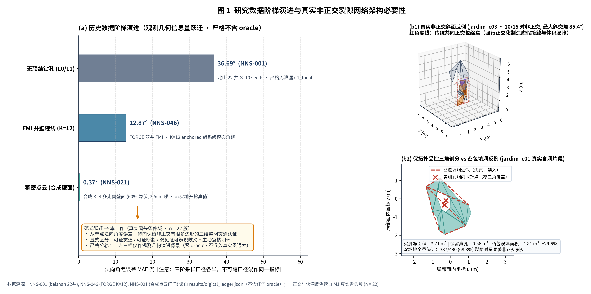
fig1_data_ladder_and_architecture.png
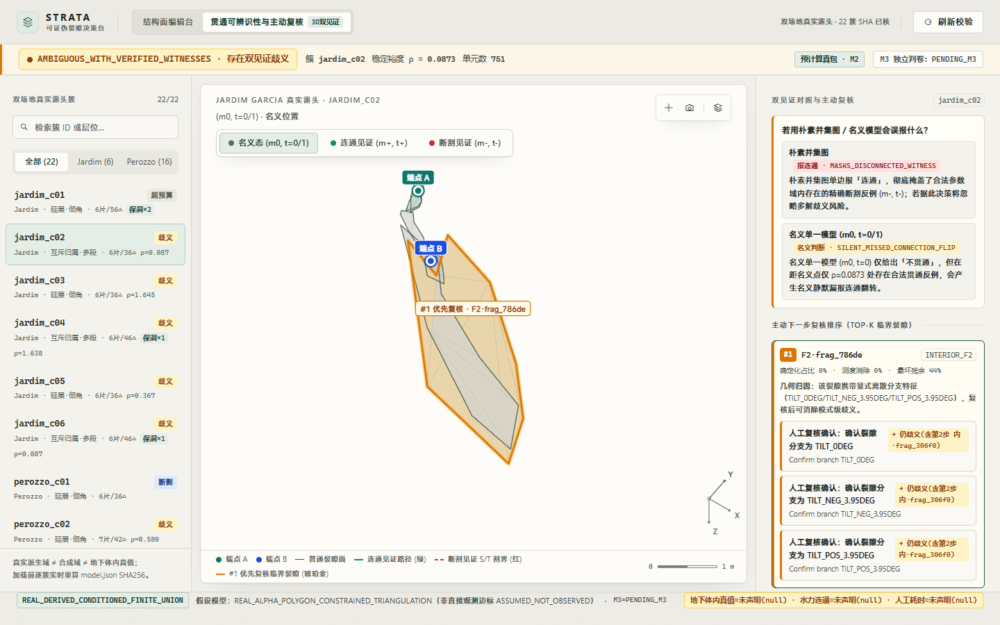
01_overview_jardim_c02_ambiguous.png
### 【第 1 页 · 封面】（`00:00`–`00:25` · 25 秒）
- **【姿态与手势】**：站定讲台右侧，目光扫视专业评委与院级评委，右手示意封面右侧的 STRATA 三维工作台实机画面。
- **【口头讲词】**：
“各位评审专家、老师们，大家好！在隧道掘进、高陡边坡与地下核废料处置库工程中，岩体里的裂隙网络到底**通不通**，直接关系到工程安全。但在真实工程里，我们永远只能看到有限的表面露头或钻孔切片。今天我们汇报的大创中期核心成果，就是一套面向真实露头与有限观测的**可证伪三维裂隙重构与贯通可辨识性决策系统**。我们不仅在巴西 `60,343,162` 点和意大利 `83,208,117` 点两大真实激光点云露头上打通了 `22` 个三维多裂隙簇的精确认证，在声明条件几何模型内实现了 **`0.00%` 静默误判**，更把消除多解歧义的平均人工复核步数从随机盲查的 **`4.65` 步压缩到了 `2.05` 步**。”
前期硬发现：数据阶梯与信息墙证明“瓶颈不在换更深神经网络”
前期跨尺度实验查明单孔无联结观测存在 30.50° 固有信息墙，只有沿“单孔无联结 → 井壁成像 → 三维稠密点云”升级空间归属信息，才能跨越几何重构门槛（见图 1）。
- 同屏核心指标（≤ 2 组）：
- 1. 三阶段数据阶梯非理想上界读数：无联结钻孔
36.69°（北山 22 井盲测）→ 井壁成像迹线 12.87°（双井 12 组系模态角距）→ 合成壁面稠密点云基准 0.37°（合成四壁空间分离数值实验，60% 隐伏、2.5 厘米噪声，非实地开挖真值）。 - 2. 单孔信息墙锚点：
30.50°（同一估计量聚类自助法 95% 置信区间 [27.01°, 34.25°]），证明仅靠一维钻孔倾角倾向统计无法还原三维真实空间交切。 - 左右版面布局：
- 左栏（数据阶梯定量柱状与折线图）：嵌入图 1 左半幅“三阶段数据阶梯与经验信息墙”，用醒目水平虚线标出
30.50°（[27.01°, 34.25°]）信息墙带，直观呈现为什么单纯堆叠深度学习无法突破物理信息缺失。 - 右栏（科学启示三卡片）：① 信息墙根因（一维钻孔丢失片间三维空间归属）；② 跨越方式（引入三维表面激光点云获取真实有限几何）；③ 新问题浮现（有了点云，传统三维建模为什么依然算不准贯通？引出下一页）。
C:\Users\晚菘\Documents\Default Project\results\midterm_sprint_20261120\M4_benchmark_figures\figures\fig1_data_ladder_and_architecture.png
fig1_data_ladder_and_architecture.png
### 【第 2 页 · 数据阶梯与信息墙】（`00:25`–`00:55` · 30 秒）
- **【翻页与手势】**：翻至第 2 页，激光笔指向左栏附图①的数据阶梯折线与 `30.50°` 水平虚线带。
- **【口头讲词】**：
“很多老师会问：为什么不用更深的神经网络直接去猜地下裂隙？这正是我们项目前半程用实测数据查明的第一个硬结论——**数据阶梯与信息墙**。我们在北山 `22` 口真实钻孔上做严格无泄漏盲测，发现所有算法在无联结一维钻孔上的单条方向误差都卡在 **`36.69°`**，撞上了 **`30.50°`**（`95%` 置信区间 **`27.01°` 至 `34.25°`**）的物理信息墙；升级到双井井壁成像迹线后，12 组系模态角距降到 **`12.87°`**；而只有在合成四壁空间分离的稠密三维点云基准下（`60%` 隐伏、`2.5` 厘米噪声，注意这是合成数值基准而非实地开挖真值），误差才能降到 **`0.37°`**。这证明：**真正的瓶颈不在换更深的神经网络，而在于获取三维空间归属与有限几何边界！**”
真实露头两大几何盲区：非正交斜面失真与自动点云过分割陷阱
真实岩体裂隙既不是正交矩形（68.78% 片对显著非正交），也不能直接套用传统自动点云分割（相对专家解译过分割高达 144.04 倍，见图 2）。
- 同屏核心指标（≤ 2 组）：
- 1. 非正交斜面占比：在双场地
22 个真实三维簇共 490 对裂隙中，法向点积绝对值落在 (0.05, 0.95) 的非正交斜交裂隙对达 337 对，占比 68.78%（任何共同正交坐标架矩形族均无法无失真表达）。 - 2. 自动分割（DSE）vs 专家人工解译对照：在 Perozzo 2024 同一露头上，自动分割产出
202,371 个面，而专家人工解译为 1,405 个面，数量过分割倍比达 144.04 倍（中位半径 0.11 米对比 1.32 米；半径小于 0.50 米的微碎面占比达 91.16% 对比专家 7.69%）。 - 左右版面布局：
- 左栏（真实裂隙非正交角分布）：展示图 2 中的双场地
490 对裂隙法向夹角分布直方图与真实含洞凹多边形三维斜面结构，证明传统正交矩形假设与凸包填洞的几何失真。 - 右栏（自动 DSE 202,371 面 vs 专家 1,405 面尺度坍塌对照）：展示图 2 右侧对数半径分布对比图，揭示直接把未同源聚合的自动分割碎片喂给连通性求解器会导致严重的拓扑失真。
C:\Users\晚菘\Documents\Default Project\results\midterm_sprint_20261120\M4_benchmark_figures\figures\fig2_real_outcrop_clusters_overview.png
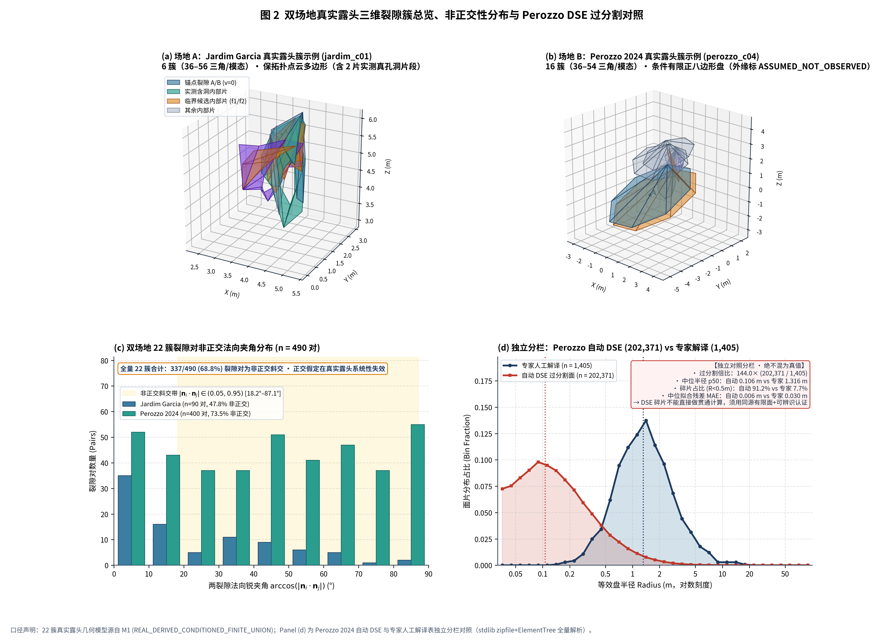
fig2_real_outcrop_clusters_overview.png
### 【第 3 页 · 真实露头上的两大盲区】（`00:55`–`01:25` · 30 秒）
- **【翻页与手势】**：翻至第 3 页，左手指向左栏非正交角分布直方图，右手指向右栏对数半径对比图（附图②）。
- **【口头讲词】**：
“但拿到了千万级三维激光点云，传统建模依然面临两大死穴：
第一是**几何表达失真**。传统方法常把裂隙简化成共同正交坐标架下的矩形；可我们在两个真实露头 `22` 个裂隙簇共 **`490` 对**裂隙上实测发现，有 **`337` 对**（占比高达 **`68.78%`**）是显著非正交的三维斜面，更有真实岩石孔洞存在，正交矩形根本表达不了。
第二是**自动分割过分割陷阱**。我们在意大利 Perozzo 2024 公开露头上全量解析发现，传统自动点云分割算法切出了 **`202,371` 个**碎片面，而地质专家人工解译只有 **`1,405` 个**面，数量过分割高达 **`144.04` 倍**！自动碎片的中位半径只有 **`0.11` 米**（专家为 **`1.32` 米**），半径小于 **`0.50` 米**的微碎面占了 **`91.16%`**（专家仅占 **`7.69%`**）。直接拿这些微碎片去算连通，拓扑结构完全失真。”
传统连通判定的致命缺陷：“不确定性沉默”与我们的三层破局范式
表面露头观测必然存在端缘遮挡与拟合残差不确定性；传统单态模型“只报一个脆弱点估计”，而我们将其革新为“可证伪三态精确认证 + 主动下一步复核”（见图 1 与图 3）。
- 同屏核心指标（≤ 2 组）：
- 1. 传统两类基线的结构性缺陷：名义单态模型（Baseline 1）在参数微扰下发生
28.57%（6/21）静默翻转；朴素并集图（Baseline 2）在 6/6（100.00%）多解歧义簇上掩盖断割反例。 - 2. 本文可证伪四态输出契约：精确区分“全模式认证贯通（
CERTIFIED_CONNECTED）”、“全模式认证断割（CERTIFIED_DISCONNECTED）”、“带双反例见证的可辨识歧义（AMBIGUOUS_WITH_VERIFIED_WITNESSES）”与“超算力预算诚实拒答（BUDGET_EXCEEDED）”。 - 左右版面布局：
- 左栏（传统范式 vs 本文可证伪范式对比图）：上方展示传统方法把残差与边界不确定性抹平为单一“通/不通”黑箱断言；下方展示本文保留离散模式 $m$ 与连续残差位移 $t \in [-1, 1]$ 的全区间精确几何判定。
- 右栏（系统三层递进闭环架构图）：放大展示图 1 右半幅三层闭环（第一层：STRATA 同源有限面与保洞三角化；第二层：精确有理整网认证与绿/红双见证；第三层：零泄漏主动下一步复核推荐与人机交互坍缩）。
C:\Users\晚菘\Documents\Default Project\results\midterm_sprint_20261120\M4_benchmark_figures\figures\fig1_data_ladder_and_architecture.pngC:\Users\晚菘\Documents\Default Project\results\midterm_sprint_20261120\M4_benchmark_figures\figures\fig3_baseline_failure_modes.png- ## 第二幕 · 核心突破：真实露头三维重构 + 精确可辨识性认证 + 主动复核（4 分钟 · 第 5–9 页）
fig1_data_ladder_and_architecture.png
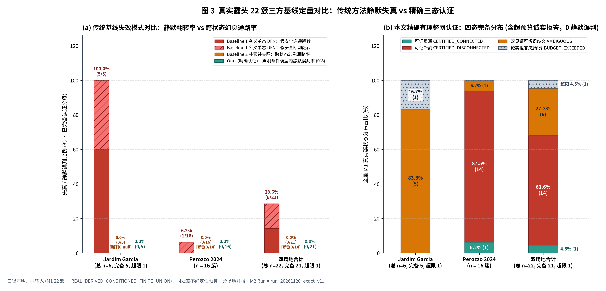
fig3_baseline_failure_modes.png
### 【第 4 页 · 不确定性沉默与三层破局架构】（`01:25`–`01:50` · 25 秒）
- **【翻页与手势】**：翻至第 4 页，手掌展开指向右侧三层递进闭环架构图。
- **【口头讲词】**：
“更危险的是传统离散裂隙网络软件的**不确定性沉默**——哪怕点云有拟合残差、边界有遮挡，传统单态模型也只给出一个脆弱的‘通’或‘不通’，在微扰下静默翻转率高达 **`28.57%`**（`6/21`）；而把所有可能接触简单叠加的朴素并集图，又会在 **`6/6`（`100.00%`）** 的歧义簇上掩盖断割风险。
为此，我们构建了三层递进闭环：**第一层**在真实点云上保拓扑重构三维有限斜面；**第二层**用精确有理算术给出‘确定贯通、确定断割、或带双反例见证的多解歧义’；**第三层**当存在歧义时，主动计算**下一步该去现场复核哪条裂隙**。”
---
## 第二幕 · 核心突破：真实露头三维重构 + 精确可辨识性认证 + 主动复核（`01:50`–`05:10` · 共 200 秒）
第一层突破：双真实露头 22 个三维多裂隙簇预注册构建与保拓扑破壁桥
在不触碰任何历史合成内核代码的前提下，打通从千万级真实激光点云到精确有理整网引擎的第一公里，按先期冻结的纯几何规则构建双场地 22 个真实三维多裂隙簇（见图 2）。
- 同屏核心指标（≤ 2 组）：
- 1. 场地一（巴西 Jardim Garcia 采石场）：源点云
60,343,162 点（主研究区 1,279,478 点，46 个真实拟合有限面、4 个真实含洞面），全枚举构建 6 个三维裂隙簇，其中 3 簇保拓扑保留真实岩石孔洞（严禁凸包填洞）。 - 2. 场地二（意大利 Finale Ligure · Perozzo 2024）：源点云
83,208,117 点（1,405 个专家拟合面几何绑定 1,405 条三维迹线），按 4 个空间象限分层构建 16 个条件有限八边形三维簇（全部非直接观测外边显式打标 ASSUMED_NOT_OBSERVED）。 - 左右版面布局：
- 左栏（双场地三维簇几何总览）：嵌入图 2 上半幅巴西采石场保洞凹多边形簇与意大利露头四象限三维裂隙簇空间分布图，标出每簇
6 至 9 片裂隙、36 至 56 个三角形（严守 64 三角预算上限）。 - 右栏（物理驱动不确定性建模与准入铁律）：明列两类物理不确定性分层——① 标准外延与倾角微扰层（
13 簇：径向 1.00 倍/1.15 倍 × 精确毕达哥拉斯有理旋转 0°/±3.95°）；② 多段可行域与互斥归属层（9 簇：双闭段 [-1, -3/5] ∪ [-2/5, 1] 及边界支持互斥归属），并展示预注册时间锁（14:52:28Z 冻结早于 15:34:31Z 建簇，零按结果挑例）。 C:\Users\晚菘\Documents\Default Project\results\midterm_sprint_20261120\M4_benchmark_figures\figures\fig2_real_outcrop_clusters_overview.png
fig2_real_outcrop_clusters_overview.png
### 【第 5 页 · 双真实露头 22 簇预注册构建】（`01:50`–`02:30` · 40 秒）
- **【翻页与手势】**：翻至第 5 页，激光笔点明巴西与意大利两大真实露头场地数据指标（附图②）。
- **【口头讲词】**：
“下面进入第二幕核心突破。为了杜绝人为挑拣对自己有利的样本，我们在写任何建簇与连通计算代码之前，先于 `2026-11-20T14:52:28Z` 冻结了纯几何预注册规则，从两大国际公开真实露头构建了 **`22` 个**三维多裂隙相互作用簇：
第一个场地是**巴西 Jardim Garcia 采石场**，原始无人机点云 **`60,343,162` 点**（研究区全分辨率子集 `1,279,478` 点），从 `46` 个真实点云拟合有限面中按最远点采样构建 **`6` 个簇**，其中 **`3` 个簇**严格保拓扑保留了真实岩石孔洞，绝不用凸包填洞；
第二个场地是**意大利 Finale Ligure 露头**，全分辨率激光点云 **`83,208,117` 点**，我们将 **`1,405` 个**专家拟合平面与 **`1,405` 条**三维迹线做纯几何最近邻绑定，按 **`4` 个**空间象限分层构建了 **`16` 个**条件有限八边形三维簇，并把所有非直接观测外边显式登记在假设台账中。每个簇包含 `6` 到 `9` 片裂隙、`36` 到 `56` 个三角形（严格控制在 `64` 三角预算内），并由实测残差驱动构建 `6` 个离散不确定性模式（全集共 `132` 个模式，涵盖 `13` 个外延与 `0°`/`±3.95°` 毕达哥拉斯有理倾角旋转簇，以及 `9` 个多段可行域与互斥归属簇）。”
第二层突破（拳头图①）：双真实场地三方基线同台定量对照
在已完备精确认证的 21 个真实三维裂隙簇上（另 jardim_c01 超 4,096 细胞预算诚实拒答），名义单态 DFN 发生 28.57% 静默翻转，朴素并集图在 6 例歧义簇上 100.00% 掩盖断割反例，而本文方法实现模型内 0.00% 静默误判（见图 3）。
- 同屏核心指标（≤ 2 组）：
- 1. 三方基线核心失真率对比（完备分母
21 簇 = 1 贯通 [4.76%] + 14 断割 [66.67%] + 6 歧义 [28.57%]）： - Baseline 1（名义单态 DFN）：静默翻转率
28.57%（6/21）——其中巴西场地完备簇 100.00%（5/5） 全部发生静默翻转，意大利场地 6.25%（1/16）；含 3 例假安全连通（14.29%）与 3 例假安全断割（14.29%）。 - Baseline 2（朴素并集图）：在
14 例真实可证断割簇上，跨状态幻觉通路误报为 0/14（0.00%）（完备集跨状态幻觉通路 0/21）；但其在全部 6/6（100.00%）多解歧义簇 上单边盲报“连通”，彻底掩盖合法域内的精确断割反例（MASKS_DISCONNECTED_WITNESS）；而算法对跨时/跨模式拼凑假通路的硬拦截牙口，已由真实坐标域 2 项定向负控（退出码 2）严格实证。 - 2. 本文方法（Ours）与诚实预算边界：声明条件模型内静默误判率
0.00%（0/21）；对 jardim_c01（模式 m4 累积需 3,358 + 835 = 4,193 细胞、全模式需 5,024 细胞 > 声明上限 4,096 细胞）严格输出 BUDGET_EXCEEDED 诚实拒答信封（占全量 22 簇的 4.55%），绝不静默截断或混入贯通分母。 - 左右版面布局：
- 左栏（三方基线失真率与四态分布柱状图）：全幅呈现图 3（左子图：名义单态 DFN 静默翻转率 vs 朴素并集图断割簇假通路率与歧义簇掩盖断割风险 vs 本文方法
0.00% 静默误判；右子图：双场地分栏四态认证比例）。 - 右栏（两条关键诚实口径高亮框）：
- 【诚实口径① · 不夸大并集假通路】：如实报告
14 例真断割簇上并集假通路为 0/14，明确指出朴素并集图在本次真实簇上的主要危害是在 6 例歧义簇上掩盖断割反例，并用定向负控证明跨状态假通路拦截牙口； - 【诚实口径② · 算力超限诚实拒答】：如实展示
jardim_c01 触发 4,096 细胞预算上限后的拒答信封机制。 C:\Users\晚菘\Documents\Default Project\results\midterm_sprint_20261120\M4_benchmark_figures\figures\fig3_baseline_failure_modes.png
fig3_baseline_failure_modes.png
### 【第 6 页 · 拳头图①：双真实场地三方基线定量对照】（`02:30`–`03:20` · 50 秒）
- **【翻页与手势】**：翻至第 6 页，重音强调附图③的三组对比柱，并专门用手指点出右侧两条诚实口径框。
- **【口头讲词】**：
“请看第一张核心结果图（附图③）：我们将传统名义单态模型（Baseline 1）、朴素并集图（Baseline 2）与我们的方法在同一批 `22` 个真实露头簇上做同源定量对比。
首先我要特别报告**第一条诚实边界**：在 `22` 个簇中，巴西场地的 `jardim_c01` 簇（含 `2` 个真实孔洞、每模式 `56` 个三角形）在精确划分到第 5 个模式时，累积细胞数达到 `3,358 + 835 = 4,193` 个（全 6 模式需 `5,024` 个细胞），超出了我们预注册声明的 **`4,096` 细胞算力预算上限**。我们的系统绝不偷偷改大预算或静默截断，而是诚实输出**超算力预算拒答信封**（占全量 `22` 簇的 `4.55%`），并严格单列在贯通分母之外。
在其余 **`21` 个完备精确认证簇**中（含 `1` 簇全模式确定贯通占 `4.76%`、`14` 簇全模式确定断割占 `66.67%`、`6` 簇多解歧义占 `28.57%`）：
- **名义单态模型（Baseline 1）** 发生了 **`6/21`（`28.57%`）的静默翻转**！尤其在几何紧邻的巴西采石场，完备的 **`5/5`（`100.00%`）** 全部发生静默翻转（全集含 `3` 例假安全连通 `14.29%` 与 `3` 例漏报断割 `14.29%`）；
- 对于**朴素并集图（Baseline 2）**，我们坚持**第二条诚实口径，绝不夸大**：在 `14` 例真实可证断割簇上，朴素并集图的跨状态幻觉通路误报确实是 **`0/14`（`0.00%`）**；它在本次真实簇上的**主要危害**，是在全部 **`6/6`（`100.00%`）多解歧义簇**上单边盲报‘连通’，彻底掩盖了合法参数域内客观存在的精确断割反例！而我们的算法对跨时间参数、跨离散模式拼凑假通路的硬拦截能力，则通过真实坐标域 `2` 项定向负控（退出码均为 `2`）完成了有牙实证；
- 相比之下，**我们的方法**在声明条件模型内实现了 **`0/21`（`0.00%`）静默误判**！”
第二层突破：精确有理双反例见证与稳定裕度 $\rho$ 解剖
彻底摒弃浮点容差猜测，通过精确有理算术枚举 124,560 对接触窗口与 10,512 个精确细胞，为每个歧义簇同时出具可三维查验的“连通路径见证 + 最小割断割见证”及精确稳定裕度 $\rho$（见图 4）。
- 同屏核心指标（≤ 2 组）：
- 1. 全网精确有理普查规模与稳定裕度分布：
21 个完备认证簇共枚举 124,560 对片对接触窗口、10,512 个精确 POINT/OPEN 细胞（总求解耗时 135.23 秒）；6 个歧义簇的精确稳定裕度 $\rho$ 分布在 0.0873 至 1.6448 之间（均值 0.7339，中位数 0.4733）。 - 2. 含真实孔洞簇
jardim_c04 双见证解剖：保留 1 个真实拓扑孔洞（每模式 46 个三角形，共 1,755 个精确细胞），稳定裕度 $\rho = 1.6375$（开区间边界相切，attained = false），同簇并存合法连通路径见证 $(m^+, t^+)$ 与合法 $S/T$ 断割见证 $(m^-, t^-)$。 - 左右版面布局：
- 左栏（22 簇稳定裕度 $\rho$ 谱系图）：展示图 4 左半幅
22 簇稳定裕度与认证状态总览（直观标出 jardim_c02/jardim_c06 的极小裕度 0.0873、perozzo_c02 的 0.5796、jardim_c04 的 1.6375、jardim_c03 的 1.6448，以及 jardim_c01 的超限拒答标签）。 - 右栏（
jardim_c04 含洞裂隙簇三维双见证几何剖面）：展示图 4 右半幅，对比同一裂隙簇在 $(m^+, t^+)$ 下绕过真实孔洞形成 A→B 贯通链，而在 $(m^-, t^-)$ 下发生精确断割的几何机理。 C:\Users\晚菘\Documents\Default Project\results\midterm_sprint_20261120\M4_benchmark_figures\figures\fig4_stability_rho_and_witness_anatomy.png
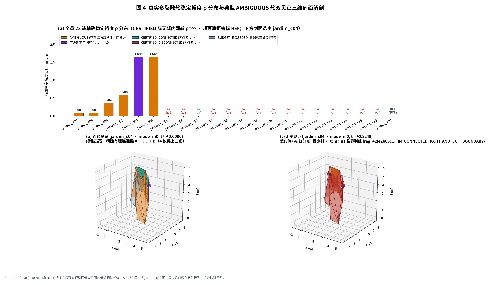
fig4_stability_rho_and_witness_anatomy.png
### 【第 7 页 · 精确有理双反例见证与稳定裕度解剖】（`03:20`–`04:00` · 40 秒）
- **【翻页与手势】**：翻至第 7 页，激光笔扫过左栏稳定裕度谱系，再聚焦右栏 `jardim_c04` 含洞裂隙三维剖面（附图④）。
- **【口头讲词】**：
“为什么我们能做到模型内零静默误判？因为我们彻底抛弃了浮点数网格采样，改用**精确有理算术**，在 `135.23` 秒内完成了 `21` 簇共 **`124,560` 对**片对接触窗口和 **`10,512` 个**精确点/开区间细胞的完整数学普查（见附图④）。
对于 `6` 个多解歧义簇，系统不仅拒绝盲猜，还同时给出可三维查验的**连通路径见证** $(m^+, t^+)$ 与**最小割断割见证** $(m^-, t^-)$，并精确算出距名义状态最近的翻转**稳定裕度 $\rho$**——实测分布在 **`0.0873` 到 `1.6448`** 之间（均值 **`0.7339`**，中位数 **`0.4733`**）。比如右图展示的 `jardim_c04` 簇，保留了 `1` 个真实拓扑孔洞（每模式 `46` 个三角形、`1,755` 个细胞，稳定裕度 `1.6375`），在连通见证下路径绕过孔洞边缘连通两端，而在断割见证下形成严密的最小割阻断。”
第三层突破（拳头图②）：零泄漏主动下一步复核排序与歧义坍缩曲线
当面临多解歧义时，我们的零泄漏主动下一步复核算法自动找出最关键的 Top-1 临界裂隙，仅需平均 2.05 步（首步消歧 57.02%）即可完成歧义坍缩，步数较随机与几何启发式基线减少一半以上（见图 5）。
- 同屏核心指标（≤ 2 组）：
- 1. 五策略同分母平均消歧步数对比（全量
6 个真实歧义簇、共 6,045 个原子细胞、零标签泄漏信念域决策树全枚举）： - 本文测度分裂策略（
OURS_MEASURE_SPLIT）：平均 2.05 步（按细胞计 2.26 步）； - 本文极小极大策略（
OURS_MINIMAX_EXACT）：平均 2.30 步（按细胞计 2.36 步）； - 随机基线（
BASELINE_RANDOM，20 种子）：平均 4.65 步（按细胞计 4.95 步）； - 几何启发式基线：按尺寸/距离平均
4.92 步（按细胞计 5.30 步），按最大面积平均 3.99 步（按细胞计 4.04 步）。 - 2. 前几步累计消歧测度比例（坍缩速率）：
- 第 1 步复核后：本文测度分裂策略即消除
57.02% 测度歧义（其中 jardim_c03 单步 100.00% 坍缩，jardim_c04 单步消歧 91.05%），远超随机基线（23.93%）、尺寸/距离启发式（11.81%）与最大面积启发式（10.52%）； - 第 3 至第 5 步：本文测度分裂第
3 步达 85.38%；本文极小极大策略第 4 步达 97.80%、第 5 步达 100.00% 完全坍缩（而随机基线到第 12 步仍仅 97.21%）。 - 左右版面布局：
- 左栏（五策略同分母主动复核坍缩曲线大图）：全幅展示图 5（含全量
6 簇主曲线、四分位区间带及分场地子图，清晰标出第 1 步 57.02% 与第 5 步 100.00% 封顶拐点）。 - 右栏（为什么我们的算法能一击必中？物理可解释归因）：展示见证差分几何角色归因（
IN_CONNECTED_PATH_AND_CUT_BOUNDARY 同时处于连通主路与最小割边界、ON_CONNECTED_WITNESS_PATH 处于连通主路、MODE_BRANCH_CANDIDATE 离散模态分叉枢纽），强调算法只读公开可行域 $D_k$ 与静态几何，零偷看隐藏真值标签。 C:\Users\晚菘\Documents\Default Project\results\midterm_sprint_20261120\M4_benchmark_figures\figures\fig5_active_next_check_collapse.png
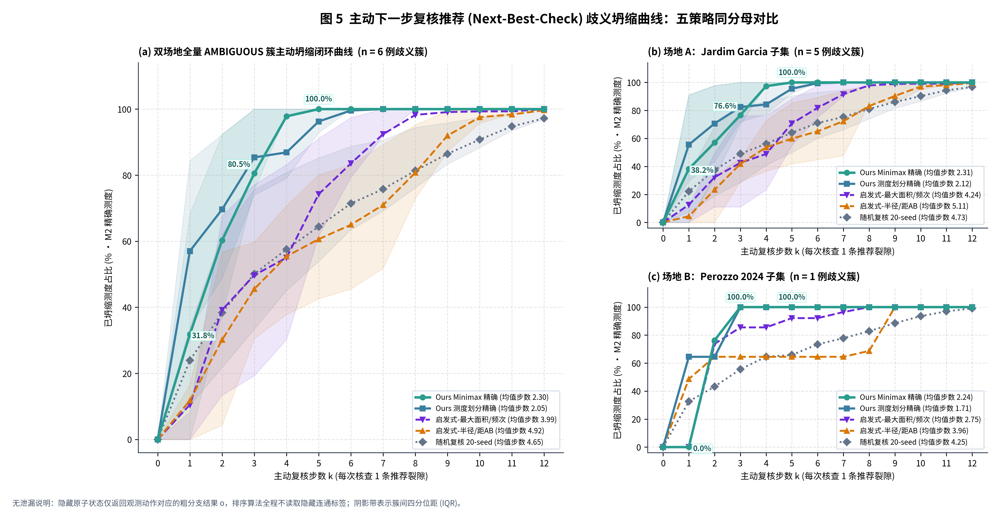
fig5_active_next_check_collapse.png
### 【第 8 页 · 拳头图②：主动下一步复核排序与坍缩曲线】（`04:00`–`04:40` · 40 秒）
- **【翻页与手势】**：翻至第 8 页，手指沿附图⑤的深绿色与墨蓝色陡升曲线向上划动，对比下方缓慢爬升的灰色/橙色基线。
- **【口头讲词】**：
“既然发现了多解歧义，工程师最痛的问题就是：**‘下一步我该去现场复核哪一条裂隙？’**
请看第二张拳头结果图（附图⑤）：我们在完全不偷看隐藏真值标签的**零泄漏信念域决策树**上，对全部 `6` 个真实歧义簇（共 **`6,045` 个**原子细胞）进行了五种策略的同分母闭环仿真：
- 采用我们的**测度分裂主动排序策略**，平均只需复核 **`2.05` 步**（按细胞计 `2.26` 步）！**仅仅复核第 `1` 条最关键裂隙，就能一举消除 `57.02%` 的参数测度歧义**（在 `jardim_c03` 上 `1` 步即 `100.00%` 坍缩，在含洞簇 `jardim_c04` 上 `1` 步消除 **`91.05%`** 歧义），第 `3` 步即消除 **`85.38%`**；
- 采用我们的**极小极大主动排序策略**，平均只需 **`2.30` 步**（按细胞计 `2.36` 步），第 `4` 步达 **`97.80%`**，第 `5` 步即达到 **`100.00%` 完全坍缩**；
- 而**随机复核基线**（`20` 个随机种子平均）需要 **`4.65` 步**（第 `1` 步仅消除 `23.93%`，到第 `12` 步仍卡在 `97.21%`），传统的**按尺寸/距离几何启发式**和**按最大面积启发式**也分别需要 **`4.92` 步**（第 `1` 步仅 `11.81%`）和 **`3.99` 步**（第 `1` 步仅 `10.52%`）。我们的主动排序把复核步数直接砍掉了一半以上！”
学术护城河：零共享代码异模型独立判卷与 37 项有牙负控防线
为彻底杜绝“自己的代码验自己的结果”，团队建立了零共享代码的异模型独立判卷体系与全链路有牙负控，从合成域到真实露头派生域实现数学证书级闭环（见图 1）。
- 同屏核心指标（≤ 2 组）：
- 1. 异模型零共享代码独立判卷战绩：
- 合成声明有理三角形域（永久分轨）：独立判卷器完成
784 条基础接触与 Farkas 证书回环测试（19 手算 + 16 正控 + 24 负控 + 5 覆盖控 + 340 片对 + 20 整网 + 360 证书回环），并在整网基础（467 条）、全区间连续语义（156 条）与跨模式标签（45 条，另加 4 条定向例）上累计完成 668 条（含定向共 672 条）整网独立复算，分歧数为 0； - 双真实露头派生条件域（
22 簇全量核验）：独立判卷器在零导入求解源码（AST 静态审计违规数 0）下，从原始有理坐标复算 21 个完备认证簇的接触窗口、三态证书与稳定裕度 $\rho$，并复核 6 个歧义簇的主动坍缩树；另对 1 个超预算簇做拒答状态一致性核验（不冒充几何重算），判卷结果：全量 22/22 簇（100.00%）独立核验均为 AGREE，DISAGREE = 0、UNDECIDABLE = 0、MALFORMED = 0（其中 jardim_c01 为超算力预算拒答的状态一致性核验，判卷器未对其做几何重算）。 - 2. 全链路有牙负控硬拒收：冲刺期四模块累计构造
36 项独立子进程负控（数据准入 12 项 + 整网认证与主动排序 10 项 + 基线防混栏 5 项 + 工作台接口与坏编辑拒收 9 项）及 1 项 290 条既有产品单元回归（合计 37 项自动化核验），负控 100.00% 非零退出精准拦截并给出首个反例。 - 左右版面布局：
- 左栏（求解器 vs 独立判卷器双轨隔离架构）：展示“提案求解器产出路径/最小割/Farkas 线性分离证书 → 异模型零共享代码判卷器独立重算 + AST 零导入审计”的防幻觉机制，配图 1 架构图右下部。
- 右栏（六大类代表性有牙负控拦截实况表）：列出评委最关心的 6 类攻击拦截：① 凸包隐蔽填洞攻击（洞内有理探测点拦截，退出码
2）；② 真实坐标域异时/异模式并集假通路伪报（退出码 2）；③ 注入孤立无关裂隙篡改推荐第 1 名（自然收益 0/1 排第 8/8 末位，篡改后退出码 2）；④ 跨场地坐标架污染与合成域混标（退出码 3 / HTTP 409）；⑤ 篡改源文件或模型 1 字节 SHA（退出码 2 / HTTP 409）；⑥ 算力超 4,096 细胞预算禁静默截断（退出码 4）。 C:\Users\晚菘\Documents\Default Project\results\midterm_sprint_20261120\M4_benchmark_figures\figures\fig1_data_ladder_and_architecture.pngC:\Users\晚菘\Documents\Default Project\results\midterm_sprint_20261120\M5_strata_workbench_demo\screenshots\01_overview_jardim_c02_ambiguous.png- ## 第三幕 · 实机演示：STRATA 3D 工作台现场交互（2 分钟 · 第 10–12 页）
fig1_data_ladder_and_architecture.png
01_overview_jardim_c02_ambiguous.png
### 【第 9 页 · 学术护城河：异模型独立判卷与 37 项有牙负控】（`04:40`–`05:10` · 30 秒）
- **【翻页与手势】**：翻至第 9 页，目光坚定看向计算机与数学评委，手掌轻拍讲台强调“零共享代码独立判卷”。
- **【口头讲词】**：
“评委老师一定会问：你们一个本科生大创团队，凭什么保证这么复杂的三维有理几何代码没有写错？
我们的护城河是**‘提案求解器—异模型独立判卷器’零共享代码双轨制**！在前期声明有理三角形合成域上，独立判卷器已完成 **`784` 条**基础接触与 Farkas 线性分离证书回环自测，并对整网基础 **`467` 条**、全区间连续语义 **`156` 条**、跨模式搜索 **`45` 条**（合计 **`668` 条**核心整网断言，含 `4` 条定向例共 `672` 条）完成全量独立复算，异模型分歧数为 **`0`**！
在本次双真实露头派生域 `22` 簇上，零共享代码独立判卷（AST 静态审计违规导入数为 `0`）结果：全量 `22/22` 簇（`100.00%`）独立核验均为 `AGREE`，`DISAGREE = 0`、`UNDECIDABLE = 0`、`MALFORMED = 0`（其中 `jardim_c01` 为超算力预算拒答的状态一致性核验，判卷器未对其做几何重算）。
同时，我们在全链路埋设了 **`36` 项独立无窗子进程有牙负控**（数据准入 `12` 项、整网认证与主动排序 `10` 项、基线防混栏 `5` 项、工作台接口与坏编辑拒收 `9` 项）外加 **`1` 项 `290` 条既有产品单元回归**（合计 **`37` 项**检验），包括故意用凸包隐蔽填洞、故意把孤立无关裂隙篡改到推荐第 1 名、故意注入跨时假通路，全部 `100.00%` 触发非零退出硬拒收！”
---
## 第三幕 · 实机演示：STRATA 3D 工作台现场交互（`05:10`–`06:50` · 共 100 秒）
实机演示分镜①（00:00–00:50）：加载真实三维裂隙簇与绿/红双见证一键切换
在零外网依赖的 STRATA 3D 离线工作台（隔离端口 8855）中加载巴西采石场 jardim_c02 真实簇，现场一键切换“翠绿连通路径见证”与“红橙最小割断割见证”。
- 同屏核心指标（≤ 2 组）：
- 1.
jardim_c02 真实簇认证读数：6 片非正交三维裂隙（15 对裂隙中 10 对非正交，占比 66.67%）、6 个离散模式、每模式 36 个三角形，枚举 751 个精确有理细胞，判定为 AMBIGUOUS_WITH_VERIFIED_WITNESSES，精确稳定裕度 $\rho = 0.0873$（attained = true）。 - 2. 双见证同屏几何对比：切换到翠绿连通见证 $(m^+, t^+)$ 时，高亮
5 片裂隙与 10 处真实三维接触点构成 A→B 贯通链；切换到红橙断割见证 $(m^-, t^-)$ 时，名义点 $(m_0, t=0)$ 处于不贯通态，清晰标出 $S/T$ 最小割分界与 0.00297 米最小标称间隙。 - 左右版面布局：
- 左栏（总览态与翠绿连通见证 $(m^+, t^+)$ 实机截图）：上下并排展示
01_overview_jardim_c02_ambiguous.png（含基线误报对照卡与 Top-k 复核清单）与 02_witness_connected_emerald.png（翠绿连通链与接触点圆环）。 - 右栏（红橙断割见证 $(m^-, t^-)$ 实机截图与分镜脚本）：展示
03_witness_disconnected_crimson.png（红白 $S/T$ 割集与断口连线），下方附精确到秒的现场操作口令（00:00–00:15 选簇验 SHA → 00:15–00:35 切绿链 → 00:35–00:50 切红割）。 C:\Users\晚菘\Documents\Default Project\results\midterm_sprint_20261120\M5_strata_workbench_demo\screenshots\01_overview_jardim_c02_ambiguous.pngC:\Users\晚菘\Documents\Default Project\results\midterm_sprint_20261120\M5_strata_workbench_demo\screenshots\02_witness_connected_emerald.pngC:\Users\晚菘\Documents\Default Project\results\midterm_sprint_20261120\M5_strata_workbench_demo\screenshots\03_witness_disconnected_crimson.png
01_overview_jardim_c02_ambiguous.png
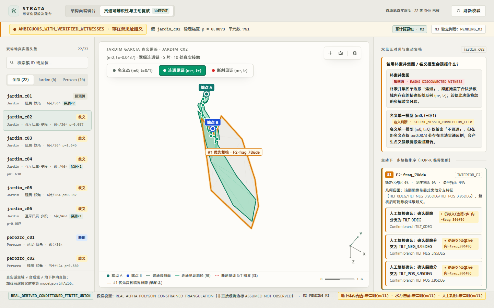
02_witness_connected_emerald.png
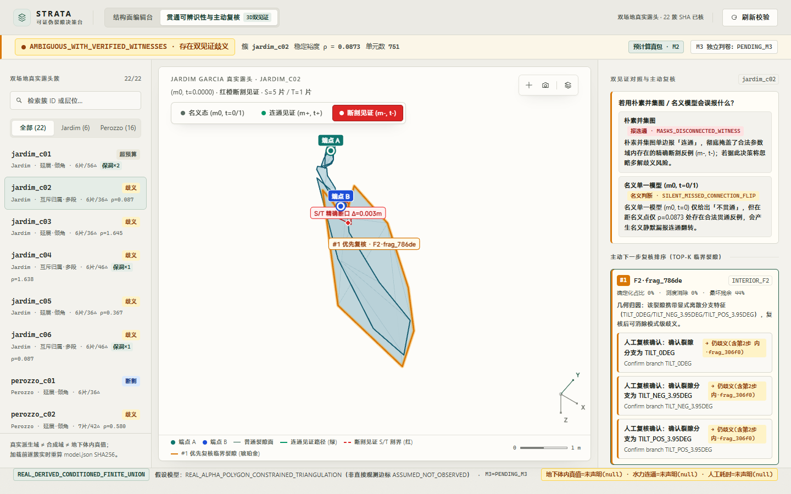
03_witness_disconnected_crimson.png
### 【第 10 页 · 实机演示分镜①：加载真实簇与绿/红双见证切换】（`05:10`–`05:45` · 35 秒）
- **【切屏 / 防卡顿预案触发点】**：
- *首选（A 级实机）*：按 `Alt+Tab` 切至已由 `launch_strata_demo.pyw` 在本地隔离端口 `8855` 无窗启动的 STRATA 3D 工作台浏览器窗口（全程零外网 CDN 请求、零黑框弹窗）；
- *保底（B/C 级无缝切换）*：若讲台电脑限制本地服务或偶发卡顿，立即播放 60 秒实机录屏或直接指认第 10–12 页预嵌的 `9` 张无头 Chrome 实拍高分截图。
- **【点击工作台与讲词】**：
“现在我们进入第三幕 STRATA 3D 工作台实机演示。
- **（`05:10–05:22`）** 大家看屏幕，工作台每次加载真实簇时都会当场重算模型文件与证书的 SHA256 哈希。我们现在选中巴西采石场的 `jardim_c02` 簇（`6` 片非正交斜面、`751` 个精确细胞），顶部状态栏醒目显示：多解歧义 `AMBIGUOUS_WITH_VERIFIED_WITNESSES`，稳定裕度 $\rho = 0.0873$。
- **（`05:22–05:34`）【点击视口上方‘翠绿连通见证 (m+, t+)’按钮】** 一键切到连通见证！三维视口瞬间将 `5` 片构成通路的裂隙染成翠绿色，并用亮绿圆环精确标出 `10` 处真实三维接触点，从端点 A 到端点 B 贯通无阻。
- **（`05:34–05:45`）【点击‘红橙断割见证 (m-, t-)’按钮】** 再一键切到断割见证！在同一合法参数域的另一侧，裂隙群被厳格划分为红白两个互不接触的最小割集合 $S$ 和 $T$，最近断口间隙 `0.00297` 米清晰可见。这就是为什么单报一个‘通’或‘不通’是在误导工程！”
实机演示分镜②（00:50–01:40）：确认琥珀金 #1 临界裂隙，现场见证歧义坍缩为确定证书
地质师无需盲目复查所有裂隙，只需点击工作台高亮为琥珀金色的 #1 临界裂隙并确认其现场约束，即可现场看到 AMBIGUOUS 实时坍缩为 CERTIFIED_CONNECTED 或 CERTIFIED_DISCONNECTED。
- 同屏核心指标（≤ 2 组）：
- 1. 演示案例 A（含真实拓扑孔洞簇
jardim_c04 单步坍缩为确定贯通）：6 片裂隙、保留 1 个真实拓扑孔洞（每模式 46 个三角形，1,755 个精确细胞）；系统将 #1 含洞临界裂隙标为琥珀金色（单步预期消歧测度高达 91.05%）；点击确认其参数带约束后，1 步即实时坍缩为 CERTIFIED_CONNECTED（剩余合法域 100.00% 贯通）。 - 2. 演示案例 B（
jardim_c02 两步递进坍缩为确定断割）：第 1 步确认 #1 临界裂隙（极小极大消歧 5/9 即 55.56%）为名义 0° 倾角模态后，可行域由 6 模式缩窄至 2 模式并自动揭示第 2 步推荐裂隙；第 2 步确认边界归属后，实时坍缩为 CERTIFIED_DISCONNECTED。 - 左右版面布局：
- 左栏（
jardim_c04 保洞簇 1 步坍缩为确定贯通前后对比）：上方展示 05_jardim_c04_holed_before_collapse.png（3D 视口内真实孔洞清晰可见，琥珀金高亮 #1 推荐片）；下方展示 06_active_collapse_certified_connected.png（确认后顶部状态栏变为翠绿 CERTIFIED_CONNECTED）。 - 右栏（
jardim_c02 2 步递进坍缩为确定断割过程）：上方展示 04a_step1_narrowed_jardim_c02.png（第 1 步缩域并弹出第 2 步推荐）；下方展示 04_active_collapse_certified_disconnected.png（第 2 步确认后变为深红 CERTIFIED_DISCONNECTED，支持一键重置复原）。 C:\Users\晚菘\Documents\Default Project\results\midterm_sprint_20261120\M5_strata_workbench_demo\screenshots\05_jardim_c04_holed_before_collapse.pngC:\Users\晚菘\Documents\Default Project\results\midterm_sprint_20261120\M5_strata_workbench_demo\screenshots\06_active_collapse_certified_connected.pngC:\Users\晚菘\Documents\Default Project\results\midterm_sprint_20261120\M5_strata_workbench_demo\screenshots\04a_step1_narrowed_jardim_c02.pngC:\Users\晚菘\Documents\Default Project\results\midterm_sprint_20261120\M5_strata_workbench_demo\screenshots\04_active_collapse_certified_disconnected.png
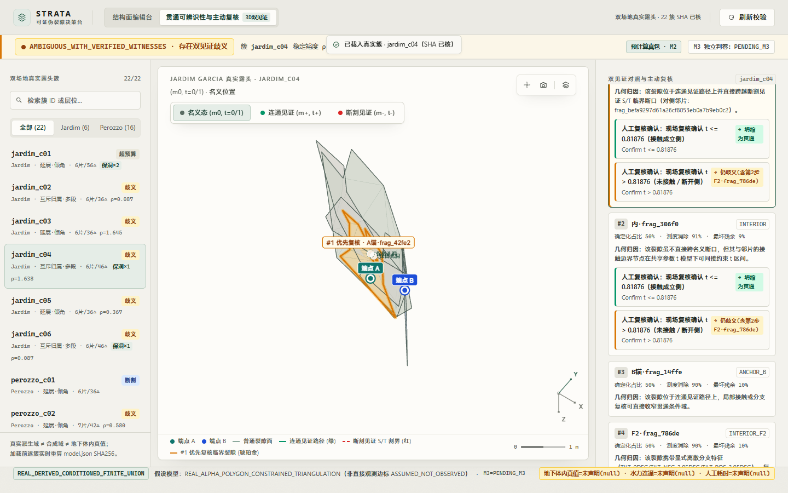
05_jardim_c04_holed_before_collapse.png
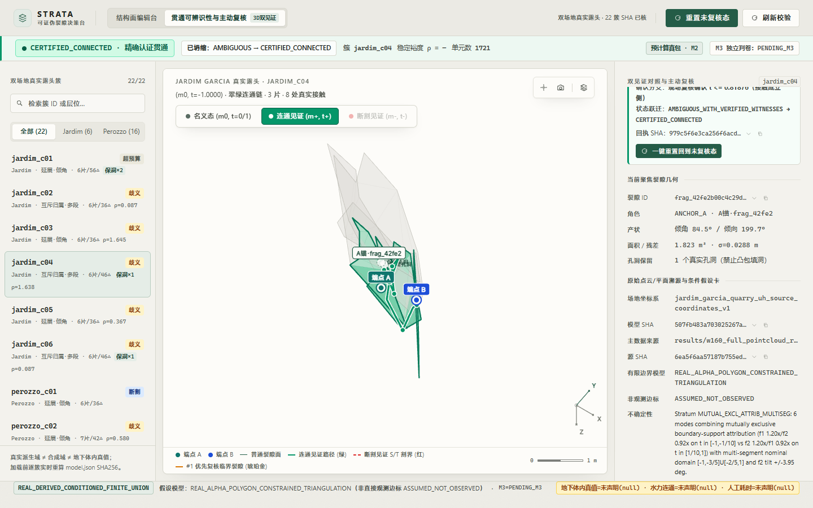
06_active_collapse_certified_connected.png
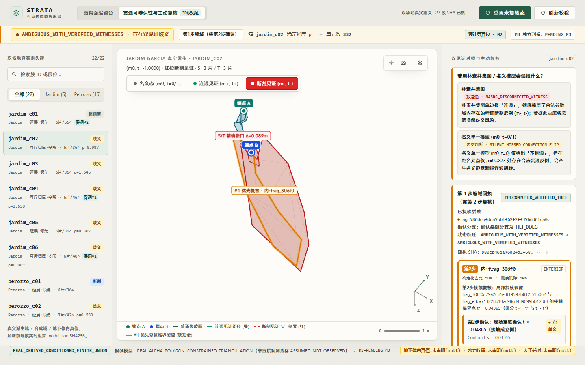
04a_step1_narrowed_jardim_c02.png
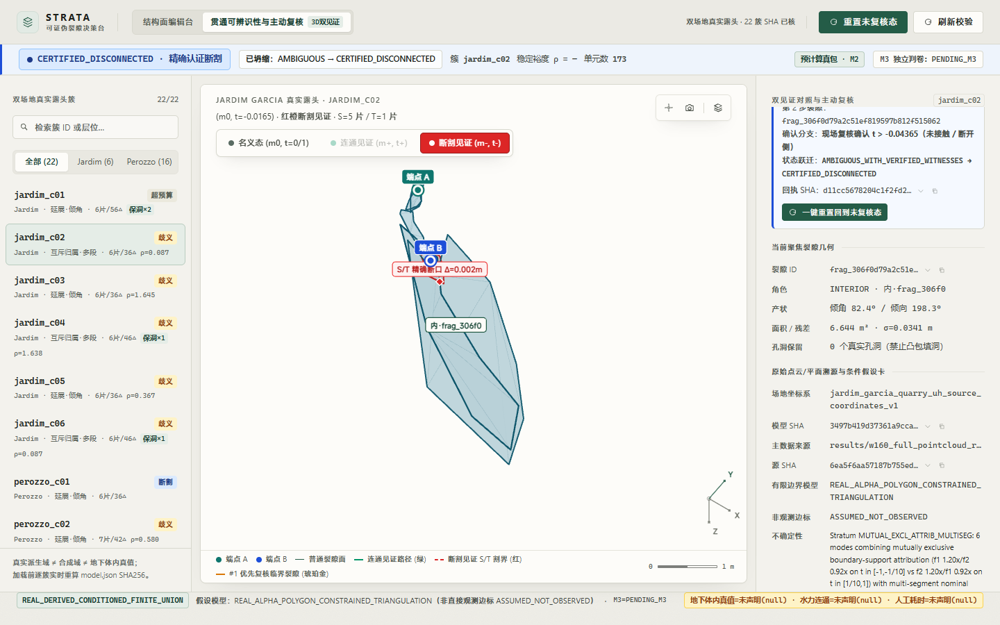
04_active_collapse_certified_disconnected.png
### 【第 11 页 · 实机演示分镜②：点击 #1 临界裂隙，现场见证歧义实时坍缩】（`05:45`–`06:25` · 40 秒）
- **【点击工作台与讲词】**：
- **（`05:45–06:05`）【在左侧清单点击含真实拓扑孔洞的 `jardim_c04` 簇】** “那怎么消除这种歧义？我们切到带有真实岩石孔洞的 `jardim_c04` 簇（标签显示‘保洞×1’、`1,755` 个精确细胞）。大家看三维视口中央，那片带真实内环孔洞的 #1 临界裂隙已经被系统自动高亮为**琥珀金色**——右侧主动复核卡片提示：它是连通主路与最小割的共同枢纽，仅复核这一片裂隙，预期就能消除 **`91.05%`** 的测度歧义！**【点击右侧面板 #1 裂隙的‘确认参数带约束’按钮】** 点击确认！大家看顶部状态栏——`AMBIGUOUS` 瞬间坍缩为翠绿色的 **`CERTIFIED_CONNECTED`（已认证确定贯通）**，剩余合法域 `100.00%` 贯通！
- **（`06:05–06:25`）【切回 `jardim_c02` 簇，连续点击第 1 步‘名义 0° 倾角’与第 2 步分支确认】** 再看 `jardim_c02` 簇：第 `1` 步确认 #1 临界裂隙（极小极大消歧 `5/9` 即 `55.56%`）为名义 `0°` 倾角，可行域从 `6` 个模式实时缩窄到 `2` 个模式，并自动弹出第 `2` 步推荐裂隙；再点确认第 `2` 步边界归属，状态当场坍缩为深红色的 **`CERTIFIED_DISCONNECTED`（已认证确定断割）**！点击‘重置复核’，随时回到初始态。”
实机演示分镜③（01:40–02:00）：跨场地切换、同源编辑台与答辩现场三级防卡顿预案
工作台同时支持一键切至意大利 Perozzo 2024 露头三维簇（perozzo_c02）与结构面同源编辑台（ADD_FRAGMENT），并配备“实机无窗直连 + 60 秒录屏 + 9 帧实拍图”三级零翻车预案。
- 同屏核心指标（≤ 2 组）：
- 1. 跨场地与双模式工程完备性：意大利
perozzo_c02 簇（7 片裂隙、每模式 42 个三角形、378 个精确细胞、稳定裕度 $\rho = 0.5796$、首推裂隙极小极大消歧 2/3 即 66.67%）秒级切换渲染；结构面编辑台补齐 ADD_FRAGMENT 同源碎片增补动作，全量 290 项既有产品单元回归测试 100.00% 通过（0 失败、1 项系统符号链接权限跳过）。 - 2. 零外网零黑框与三级防卡顿保障：无头 Chrome 端到端实测
9 帧交互截图，外部 CDN/网络请求数为 0；全程采用 pythonw.exe 与 CREATE_NO_WINDOW（标志位 134217728）零控制台弹窗启动。 - 左右版面布局：
- 左栏（Perozzo 2024 场地切换与结构面编辑台实机截图）：并排展示
07_perozzo_c02_outcrop_overview.png（意大利露头 16 簇列表与三维正八边形盘交切视口）与 00_workbench_add_fragment.png（结构面编辑台 #ed-action=ADD_FRAGMENT 提交 v2 事务实机截图）。 - 右栏（答辩现场三级无缝切换预案卡）：
- A 级（首选 · 实机交互）：双击无窗启动器
launch_strata_demo.pyw 直连本地隔离端口 8855，现场实操 120 秒； - B 级（次选 · 60 秒保底高清录屏）：若答辩讲台电脑禁用本地端口，按快捷键 1 秒切入 60 秒实机操作录屏，口头讲稿时间轴与视频帧完全同步；
- C 级（兜底 · 本 PPT 嵌好的 9 张实机高分截图）：即使讲台电脑无法播放视频，直接翻阅第 10–12 页的高清实机截图，所有 SHA256 与几何细节一字不漏。
C:\Users\晚菘\Documents\Default Project\results\midterm_sprint_20261120\M5_strata_workbench_demo\screenshots\07_perozzo_c02_outcrop_overview.pngC:\Users\晚菘\Documents\Default Project\results\midterm_sprint_20261120\M5_strata_workbench_demo\screenshots\00_workbench_add_fragment.png- ## 第四幕 · 诚实边界、阶段成果清单与下半程计划（90 秒 · 第 13–15 页）
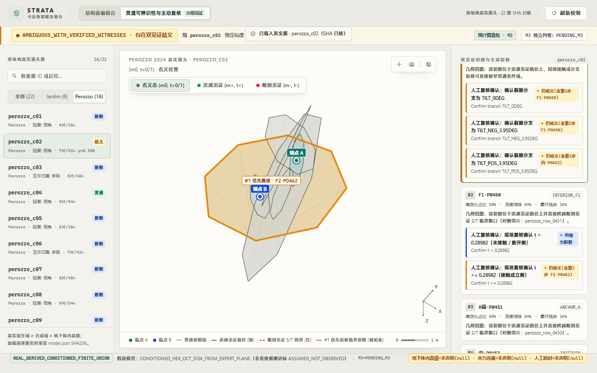
07_perozzo_c02_outcrop_overview.png
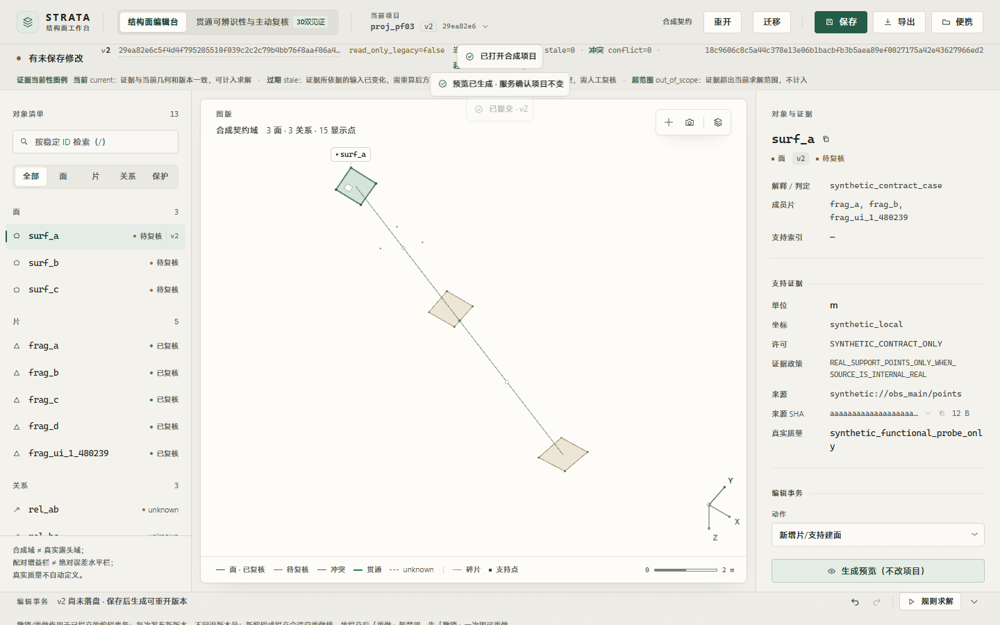
00_workbench_add_fragment.png
### 【第 12 页 · 实机演示分镜③：跨场地切换与结构面同源编辑台】（`06:25`–`06:50` · 25 秒）
- **【点击工作台与切回 PPT】**：
- **（`06:25–06:40`）【点击左侧意大利 Perozzo 2024 场地 `perozzo_c02` 簇，再点顶部‘结构面编辑台’Tab】** “我们还可以一键切到意大利 Perozzo 2024 露头的 `perozzo_c02` 簇（`7` 片裂隙、`42` 个三角形、`378` 个细胞、稳定裕度 `0.5796`、首推消歧 `2/3` 即 `66.67%`）；切回顶部‘结构面编辑台’模式，还可以在线执行 `ADD_FRAGMENT` 同源碎片增补，全套改动通过了 `290` 项既有产品单元回归测试（`0` 失败）。
- **（`06:40–06:50`）【切回 PPT 第 13 页】** 演示完毕，我们切回幻灯片第四幕。”
---
## 第四幕 · 诚实边界、阶段成果清单与下半程计划（`06:50`–`08:00` · 共 70 秒）
顶级科研素养：已证实结论 vs 诚实学术边界（三栏铁律）
科学的尊严在于对边界的诚实——我们严格区分“在声明条件几何模型内已数学证明的结论”与“因物理信息缺失而明确记为 null 的不主张项”（见图 3）。
- 同屏核心指标（≤ 2 组）：
- 1. 已严格证实的核心量化成果（可当场重算复核）：双场地
22 个真实露头三维裂隙簇 100.00% SHA256 溯源闭环；21 个完备认证簇上名义单态 DFN 静默翻转 28.57%（6/21）对比本文方法模型内静默误判 0.00%（0/21）；6 个歧义簇上主动下一步复核将平均消歧步数从随机 4.65 步降至 2.05 步。 - 2. 诚实声明为空分母的三项
null 指标与 1 项算力拒答（绝不填 0 或夸大）： - 地下岩体内部无条件贯通真值误判率：
field_error_rate = null（仅靠表面露头点云在物理上不可观测岩体深部盲区真值）； - 水力导通与渗流流量：
hydraulic = null（几何接触是导水的必要非充分条件，水力导通还需裂隙开度、充填物与压水试验标定）； - 野外地质师人工复核实测耗时：
human_time = null（2.05 步为反事实信念树仿真步数，不冒充野外实测工时）； - 算力超限簇诚实拒答：
jardim_c01（需 5,024 细胞 > 4,096 预算上限）单列输出 BUDGET_EXCEEDED。 - 左右版面布局：
- 左栏（“已严格证实”绿卡 vs “诚实不主张”琥珀卡双栏对照表）：逐条对比① 表面露头条件有限几何 vs 地下体内无条件真值；② 几何盘片接触拓扑 vs 水力渗流导通；③ 信念树仿真复核步数 vs 野外真人实测工时；④ 真实露头条件域 vs 合成有理三角形域（永久分轨，严禁混栏）。
- 右栏（工作台常驻学术边界条与拒答信封特写）：截取
01_overview_jardim_c02_ambiguous.png 底部固定常驻的学术免责边界栏与图 3 的 BUDGET_EXCEEDED 单列柱，展示“把学术诚实写进软件界面与机器判级 JSON”的制度设计。 C:\Users\晚菘\Documents\Default Project\results\midterm_sprint_20261120\M4_benchmark_figures\figures\fig3_baseline_failure_modes.pngC:\Users\晚菘\Documents\Default Project\results\midterm_sprint_20261120\M5_strata_workbench_demo\screenshots\01_overview_jardim_c02_ambiguous.png
fig3_baseline_failure_modes.png
01_overview_jardim_c02_ambiguous.png
### 【第 13 页 · 顶级科研素养：已证实 vs 诚实学术边界】（`06:50`–`07:15` · 25 秒）
- **【翻页与手势】**：翻至第 13 页，右手指向左栏“已严格证实”与右栏“三项空分母恒记 `null`”对照卡。
- **【口头讲词】**：
“第四幕，我们首先向评委老师坦诚交代本项目的**科学边界**。在我们的所有机器判级文件与工作台底部常驻栏里，有三个指标严格保持为空值 `null`，绝不填 `0` 冒充完美：
第一，**地下岩体深部盲区无条件贯通真值误判率为 `null`**——仅凭表面露头点云在物理上不可能看穿地下盲区，我们的精确结论严格定义在显式声明的条件有限几何模型内；
第二，**水力导通与渗流指标为 `null`**——几何接触只是导水的拓扑前提，水力导通还取决于裂隙开度与压水试验；
第三，**野外地质师真实人工耗时为 `null`**——`2.05` 步是零泄漏信念树仿真步数，不虚报为野外实测省时比例；加上 `jardim_c01` 超 `4,096` 细胞算力上限时的诚实拒答，这就是我们团队恪守的学术底线。”
立项申报书指标中期达成对标与下半程四大攻坚计划
中期已全面达成并深化立项申报书的前三大核心算法与系统模块，下半程将重点攻克“微 CT 体内贯通真值基准、分层加速破算力墙、水力耦合与软著论文产出”（见图 5）。
- 同屏核心指标（≤ 2 组）：
- 1. 中期已完成立项指标量化交账：
3 大数据阶梯（钻孔/成像/点云）信息墙查明；2 个千万级真实露头场地共 22 个三维非正交裂隙簇（含 3 簇保洞）精确有理建模；21 簇精确三态认证 + 6 簇主动复核平均步数降至 2.05 步；1 套零外网离线 STRATA 3D 双模式工作台（通过 290 项回归测试）。 - 2. 下半程结题目标规划（后半程 6 个月）：① 接入
1 至 2 组三维微 CT 或透明岩体受控物理模型建立体内贯通真值基准；② 引入分层包围盒（BVH）与区间剪枝将单簇细胞承载上限从 4,096 提升至 65,536 以上（解决 jardim_c01 类高密含洞簇）；③ 登记 1 项国家计算机软件著作权（STRATA 三维裂隙重构与可辨识性工作台）并完成 1 篇方法学学术论文投稿。 - 左右版面布局：
- 左栏（立项申报书指标 vs 中期实际交付逐条对标表）：四行对标——① 多源裂隙表征与统计 → 已完成并发现
30.50° 信息墙与 68.78% 非正交率；② 三维精细重构 → 已实现保洞凹多边形与条件八边形同源重构；③ 连通性评估 → 升级为精确有理三态认证与主动下一步复核；④ 可视化软件系统 → STRATA 3D 双模式离线工作台已实机跑通。 - 右栏（下半程四大攻坚里程碑路线图）：用四级阶梯卡片呈现“微 CT 体内真值基准 → 多参数连续倾角与分层加速 → 开度/水力筛查耦合 → 软著登记与论文投稿”，配图 5 主动坍缩曲线作为方法学论文核心附图预览。
C:\Users\晚菘\Documents\Default Project\results\midterm_sprint_20261120\M4_benchmark_figures\figures\fig5_active_next_check_collapse.png
fig5_active_next_check_collapse.png
### 【第 14 页 · 立项申报书对标与下半程攻坚计划】（`07:15`–`07:40` · 25 秒）
- **【翻页与手势】**：翻至第 14 页，手指依次点过左栏立项指标交账表与右栏下半程四大里程碑。
- **【口头讲词】**：
“对照大创立项申报书，中期我们已经超额完成了多源数据阶梯信息墙查明、千万级双真实露头保拓扑三维重构、精确有理三态认证与主动下一步复核算法，以及 STRATA 3D 离线工作台。
在下半程结题冲刺中，我们将推进四项工作：一是引入**三维微 CT 与受控透明岩体物理模型**，补齐体内贯通真值基准；二是用**分层包围盒与区间剪枝加速**突破 `4,096` 细胞预算墙，扩展到百片级裂隙网与连续倾角微扰；三是耦合**裂隙开度代理与水力筛查**；四是完成 **STRATA 三维工作台软件著作权登记**与 **1 篇方法学学术论文投稿**。”
总结陈词与致谢 Q&A：查明一面墙 · 铸造一把尺 · 点亮一盏灯
本项目不做“掩盖不确定性的黑箱预测”，而是查明观测信息墙、铸造精确有理双见证标尺、点亮主动下一步复核明灯，让每一个工程几何判断都可证伪、可溯源、可交互（见图 4）。
- 同屏核心指标（≤ 2 组）：
- 1. 三句话核心科学贡献回顾：
- 查明一面墙：从单孔
36.69°（墙锚 30.50°）到真实露头 68.78% 非正交斜面与自动分割 144.04 倍过分割，定位了三维裂隙重构的真正几何瓶颈； - 铸造一把尺：在双场地
22 个真实簇上完成精确有理三态认证（完备 21 簇 + 超限拒答 1 簇），拦截名义单态 DFN 28.57% 静默翻转与朴素并集图 6/6 歧义簇断割掩盖，实现声明模型内 0.00% 静默误判； - 点亮一盏灯：原创零泄漏主动下一步复核排序器，将消除多解歧义的平均复核步数从
4.65 步压缩至 2.05 步（首步消歧 57.02%），并在 STRATA 3D 工作台实现一键交互坍缩。 - 2. 答辩现场备查证据库（5 秒内可当场调阅）：
1 份全片数字溯源映射表（number_traceability_map.json）、5 张 300 DPI 高清基准大图、9 张无头浏览器实机截图、37 项有牙负控与回归报告、20 问评委尖锐问题标准应答卡。 - 左右版面布局：
- 左栏（“墙 · 尺 · 灯”三联大字总结卡）：三张高对比度学术总结卡片，每张卡片绑定 1 组最硬核的实测数字与源 JSON 指针，视觉干净有力。
- 右栏（双见证解剖图 + 实时坍缩绿链图 + 致谢与评委提问引导）：并列展示图 4 双见证剖面与
06_active_collapse_certified_connected.png 坍缩绿链实机图，底部标注“恳请各位评委老师批评指正！现场已备好离线 STRATA 3D 工作台与 20 问速查台账”。 C:\Users\晚菘\Documents\Default Project\results\midterm_sprint_20261120\M4_benchmark_figures\figures\fig4_stability_rho_and_witness_anatomy.pngC:\Users\晚菘\Documents\Default Project\results\midterm_sprint_20261120\M5_strata_workbench_demo\screenshots\06_active_collapse_certified_connected.png- ## 附录 · 本大纲引用的 5 张核心附图标准题注（与正文引用双向严格对齐）
- 图 1：三阶段数据阶梯（无联结钻孔
36.69° / 墙锚 30.50° → 井壁成像 12.87° → 合成壁面稠密点云基准 0.37°）与可证伪三维裂隙重构及主动可辨识性系统整体架构图（文件：C:\Users\晚菘\Documents\Default Project\results\midterm_sprint_20261120\M4_benchmark_figures\figures\fig1_data_ladder_and_architecture.png） - 图 2：巴西 Jardim Garcia（
6 簇含 3 簇保洞）与意大利 Perozzo 2024（16 簇四象限）双真实露头 22 个三维多裂隙簇几何总览、68.78% 非正交角分布及自动分割 202,371 面过分割对照图（文件：C:\Users\晚菘\Documents\Default Project\results\midterm_sprint_20261120\M4_benchmark_figures\figures\fig2_real_outcrop_clusters_overview.png） - 图 3：双场地
22 簇三方基线定量对照（名义单态 DFN 28.57% 静默翻转、朴素并集图 0/14 断割簇假通路与 6/6 歧义簇掩盖断割反例、本文方法模型内 0.00% 静默误判及 jardim_c01 超预算诚实拒答四态分布图）（文件：C:\Users\晚菘\Documents\Default Project\results\midterm_sprint_20261120\M4_benchmark_figures\figures\fig3_baseline_failure_modes.png） - 图 4：双场地
22 簇精确有理稳定裕度 $\rho$（0.0873–1.6448）分布谱系与含真实拓扑孔洞簇 jardim_c04（$\rho = 1.6375$）三维连通/断割双反例见证几何解剖图（文件：C:\Users\晚菘\Documents\Default Project\results\midterm_sprint_20261120\M4_benchmark_figures\figures\fig4_stability_rho_and_witness_anatomy.png） - 图 5：全部
6 例真实多解歧义簇（6,045 个精确细胞）上五种主动下一步复核策略同分母零泄漏反事实坍缩曲线对比图（本文测度分裂均值 2.05 步、极小极大均值 2.30 步 vs 随机 4.65 步、几何启发式 4.92 / 3.99 步）（文件：C:\Users\晚菘\Documents\Default Project\results\midterm_sprint_20261120\M4_benchmark_figures\figures\fig5_active_next_check_collapse.png）
fig4_stability_rho_and_witness_anatomy.png
06_active_collapse_certified_connected.png
fig1_data_ladder_and_architecture.png
fig2_real_outcrop_clusters_overview.png
fig3_baseline_failure_modes.png
fig4_stability_rho_and_witness_anatomy.png
fig5_active_next_check_collapse.png
### 【第 15 页 · 总结陈词与致谢 Q&A】（`07:40`–`08:00` · 20 秒）
- **【翻页与鞠躬致谢】**：翻至第 15 页，声音洪亮收束全篇。
- **【口头讲词】**：
“最后，用三句话总结我们的中期答辩：**查明一面墙**（`30.50°` 单孔信息墙与 `68.78%` 非正交三维斜面）、**铸造一把尺**（双场地 `22` 簇精确有理双见证认证，模型内 `0.00%` 静默误判）、**点亮一盏灯**（主动下一步复核把消歧平均步数从 `4.65` 步降到 `2.05` 步）。全片每一个数字均可在现场 5 秒内追溯到在盘 JSON 并从零重算。我的汇报完毕，恳请各位评委老师批评指正！”
🛡️ 评委最尖锐 20 问 · 标准应答速查卡
Q01 ★★★ 极高危 · 岩土与地质专业评委必问 “没有地下开挖真值，你们怎么证明算法在真实岩体上有效？”
### Q01（★★★ 极高危 · 岩土与地质专业评委必问）：“没有地下开挖真值，你们怎么证明算法在真实岩体上有效？”
- **提问杀伤点**：试图用“没有把山体挖开看内部真值”否定整套方法在真实露头上的科学价值。
- **一句话破题金句**：“老师问到了岩体力学最核心的痛点——表面露头点云在物理上确实看不穿地下深部盲区，因此我们严格将地下无条件真值误判率记为空值 `null`；我们证明有效性的对象，是在**真实露头拟合残差与边界不确定性包络内，传统方法有多大概率发生自我矛盾的静默翻转，以及如何用数学证书消除这种翻转**。”
- **30 秒标准应答**：
“首先，我们绝不把表面露头模型冒充为地下深部开挖真值（`field_error_rate = null`）。但在真实工程中，工程师拿到激光点云拟合出的平面和残差后，必须判断裂隙簇在观测误差范围内是否贯通。我们在巴西采石场（`60,343,162` 点）和意大利露头（`83,208,117` 点）构建的 `22` 个真实三维裂隙簇（完备认证 `21` 簇）上用精确有理算术证明：传统名义单态模型在实测拟合残差驱动的合法微扰下，有 **`6/21`（`28.57%`，其中巴西场地 `5/5` 即 `100.00%`）** 会发生从通到断或从断到通的**静默翻转**！我们的方法在声明条件模型内实现了 **`0/21`（`0.00%`）静默误判**，对每例歧义同时给出可三维核验的连通路径见证与最小割断割见证，这是纯粹由精确几何与数学证书支撑的硬有效性。”
- **现场调取指令**：翻至 PPT 第 6 页（附图③）与第 13 页（诚实边界表），指向 `benchmark_summary.json#real_outcrop_benchmarks.combined_real_conditioned`。
- **绝对禁踩红线**：严禁口头说“我们的算法预测了地下真实贯通”或把 `0.00%` 模型内静默误判说成“现场开挖零误差”。
Q02 ★★★ 极高危 · 岩土与数学建模评委必问 “条件有限盘/闭合假设会不会太强？换一种假设结论变不变？”
### Q02（★★★ 极高危 · 岩土与数学建模评委必问）：“条件有限盘/闭合假设会不会太强？换一种假设结论变不变？”
- **提问杀伤点**：质疑意大利 Perozzo 2024 露头采用的条件正八边形有限盘或巴西采石场的残差平移包络假设如果改变，结论是否会推倒重来。
- **一句话破题金句**：“如果换一种边界外延或倾角假设，名义通断结论**确实会变**——而这恰恰证明了传统‘只选一种固定假设给单一结论’的危险性，也正是我们引入**多模式（每簇 `6` 模式）联合认证与假设台账（`assumption_register`）**的根本原因！”
- **30 秒标准应答**：
“老师一针见血！在意大利露头 `1,405` 条专家迹线中，绝大多数是受露头表面截断的开迹线。如果强行假定某一个固定半径圆盘，结论极易随半径假设翻转。因此我们做了两件事：第一，将所有非直接观测的闭合边界在模型文件顶层强制打标为 `ASSUMED_NOT_OBSERVED`（假设非实测），严禁混充直接观测支持；第二，我们在每个真实簇上显式纳入 **`6` 个离散不确定性模式**（全集 `22` 簇共 **`132` 个模式**），把边界外延（`1.00` 倍对比 `1.15` 倍）、倾角有理偏转（`0°` 对比 `±3.95°`）以及边界支持互斥归属同时放进搜索引擎。换假设会不会变，系统直接用 `CERTIFIED`（换遍 `6` 种模式都不变）还是 `AMBIGUOUS`（换假设会翻转，并给出翻转临界距离 $\rho$）明确告诉工程师！”
- **现场调取指令**：翻至 PPT 第 5 页与第 10 页，或在 STRATA 工作台点击 `jardim_c02` 展示 `6` 个模式下的分叉树。
- **绝对禁踩红线**：严禁声称正八边形边界或残差放大系数 `2` 是“唯一真实的物理边界”。
Q03 ★★★ 极高危 · 工程软件与行业评委必问 “和传统商业 DFN 软件（如 FracMan）或点云工具（CloudCompare / DSE）本质区别是什么？”
### Q03（★★★ 极高危 · 工程软件与行业评委必问）：“和传统商业 DFN 软件（如 FracMan）或点云工具（CloudCompare / DSE）本质区别是什么？”
- **提问杀伤点**：考察学生是否只是把现成点云软件和传统网格工具拼凑了一下。
- **一句话破题金句**：“CloudCompare 和 DSE 管的是‘点云怎么切出面’，FracMan 等传统 DFN 管的是‘抽样生成一个单态网络算通断’，而我们的 STRATA 系统解决的是它们中间缺失的**‘保拓扑同源重构 + 全参数域精确双见证认证 + 下一步主动复核哪片裂隙’**。”
- **30 秒标准应答**：
“本质区别有三点：
第一，针对点云工具（如 DSE）：我们在 Perozzo 2024 露头上实测发现，自动 DSE 切出了 **`202,371` 个**碎片面，相对专家 **`1,405` 个**面过分割达 **`144.04` 倍**（半径小于 `0.50` 米的微碎面占 **`91.16%`**）；而我们的第一层架构保留了同源测量 SHA256 与真实岩石孔洞拓扑（巴西场地 `3` 簇保洞，绝不凸包填平）。
第二，针对传统 DFN（如单次实现的 FracMan 几何网格）：传统方法在名义参数点只给一个布尔值，在我们的 `21` 个完备真实簇上有 **`28.57%`（`6/21`）** 发生静默翻转；我们用精确有理算术遍历全部 `10,512` 个细胞，同时给出连通路径见证与最小割断割见证。
第三，传统软件无法回答‘多解时下一步去现场测谁’，而我们的第三层主动复核算法平均只需 **`2.05` 步**就能消除歧义。”
- **现场调取指令**：翻至 PPT 第 3 页（附图② DSE `144.04` 倍过分割）与第 6 页（附图③ 三方基线对照）。
- **绝对禁踩红线**：严禁贬低商业软件在统计渗流模拟上的工程地位，也不可声称本系统已包含商业软件的水力有限元求解器。
Q04 ★★★ 极高危 · 计算机与算法评委必问 “精确有理算术扩展到几百上千条裂隙会不会算不动？你们为什么会有一个簇算力超限拒答？”
### Q04（★★★ 极高危 · 计算机与算法评委必问）：“精确有理算术扩展到几百上千条裂隙会不会算不动？你们为什么会有一个簇算力超限拒答？”
- **提问杀伤点**：直击精确有理算术（`Fraction`）的组合复杂度，并拿 `jardim_c01` 的 `BUDGET_EXCEEDED` 拷问算法扩展性。
- **一句话破题金句**：“几百上千条裂隙如果直接做全局精确有理细胞分解确实会遇到组合爆炸——这正是为什么我们在预注册中设立了每簇 `64` 三角形、`4,096` 细胞的硬算力预算，并在 `jardim_c01` 触及 `4,193` 细胞时**诚实触发 `BUDGET_EXCEEDED` 拒答，而不是偷偷改回浮点近似糊弄过关**！”
- **30 秒标准应答**：
“老师看得非常准！在双场地 `22` 个真实簇中，`21` 个簇（每簇 `6` 到 `9` 片裂隙、`36` 到 `56` 个三角形）总共枚举了 **`124,560` 对**接触窗口和 **`10,512` 个**精确细胞，总耗时仅 **`135.23` 秒**（平均每簇约 `6` 秒）。唯独巴西场地的 `jardim_c01` 簇含有 `2` 个复杂真实孔洞、每模式达 `56` 个三角形，在算到第 5 个模式（`m4`）时累积细胞数达到 `3,358 + 835 = 4,193` 个（全 6 模式需 `5,024` 个细胞），超过了预注册声明的 **`4,096` 细胞预算上限**（片对预算上限 `65,536`，有理数位长上限 `8,192` 位）。
工程上，大尺度岩体贯通瓶颈往往取决于局部高危交切簇。我们当前采用‘全局包围盒粗筛 + 局部关键簇（`6`–`12` 片）精确有理认证’的分层架构；下半程我们将引入层次包围盒（BVH）与参数区间惰性剪枝，在保持 `100.00%` 精确有理证书的前提下把单簇容量提升一个数量级以上。”
- **现场调取指令**：翻至 PPT 第 6 页右栏诚实口径框与第 7 页（附图④ 顶部 `jardim_c01` 超限标记）。
- **绝对禁踩红线**：严禁声称当前精确有理引擎可以直接在几秒内全网无剪枝跑完上千片三角形裂隙。
Q05 ★★★ 极高危 · 计算机与方法学评委必问 “你们大创本科生团队怎么保证这么复杂的三维精确几何与有理算术代码没有写错？”
### Q05（★★★ 极高危 · 计算机与方法学评委必问）：“你们大创本科生团队怎么保证这么复杂的三维精确几何与有理算术代码没有写错？”
- **提问杀伤点**：怀疑学生写的三维三角形随参数平移求交、细胞分解和主动决策树存在隐蔽 bug 或自说自话。
- **一句话破题金句**：“我们不靠‘自己拍胸脯’，而是建立了一套**‘提案求解器产出 Farkas 数学证书 + 异模型零共享代码独立判卷器从零复算 + 36 项有牙负控攻击’**的三重铁律！”
- **30 秒标准应答**：
“我们从三个层面彻底锁死代码正确性：
第一，**数学证书自证**：求解器不仅输出通/断，对每个连通细胞必须给出顶点重心坐标精确落盘的三维接触路径见证，对每个断割细胞必须给出无活动跨边的 $S/T$ 最小割划分及 Farkas 线性分离超平面证书。
第二，**异模型零共享代码独立判卷**：我们用不同模型家族独立编写了判卷器，经 AST 静态语法树审计确认与求解器**零代码共享（违规导入数为 `0`）**。在合成声明有理三角形域上，独立判卷器完成了 **`784` 条**基础接触与证书回环测试，以及 **`668` 条**（`467` 条整网基础 + `156` 条全区间连续语义 + `45` 条跨模式搜索，含 `4` 条定向例共 `672` 条）整网独立复算，分歧数为 **`0`**；在本次真实露头派生域 `22` 簇上，独立盲判结果为：全量 `22/22` 簇（`100.00%`）独立核验均为 `AGREE`，`DISAGREE = 0`、`UNDECIDABLE = 0`、`MALFORMED = 0`（其中 `jardim_c01` 为超算力预算拒答的状态一致性核验，判卷器未对其做几何重算）。
第三，**`36` 项独立子进程有牙负控**（外加 `290` 项产品单元回归）：我们故意构造篡改证书、跨时假通路、凸包隐蔽填洞等 `36` 种错误输入去攻击系统，`100.00%` 被非零退出精准拦截！”
- **现场调取指令**：翻至 PPT 第 9 页（学术护城河表），现场展示负控拦截退出码。
- **绝对禁踩红线**：严禁把真实派生域独立判卷 `22/22` 簇全量 `AGREE` 说成“证明求解器代码绝对无 bug”——独立判卷只证明两套零共享代码的实现从原始有理坐标重算零分歧；也不可把 `jardim_c01` 的超算力预算拒答状态一致性核验说成几何重算。
Q06 ★★★ 极高危 · 大创管理席与院级评委必问 “中期之前和之后分别完成了立项申报书里的哪些指标？结题产什么论文/软著？”
### Q06（★★★ 极高危 · 大创管理席与院级评委必问）：“中期之前和之后分别完成了立项申报书里的哪些指标？结题产什么论文/软著？”
- **提问杀伤点**：核查项目是否偏题、经费与工作量是否饱满、结题能否交出硬指标成果。
- **一句话破题金句**：“中期前我们完成了申报书承诺的**全部四个核心技术模块（多源表征、三维重构、贯通认证、STRATA 三维软件工作台）并实现了从统计向可证伪决策的学术跃升**；下半程将交付 **1 项国家软件著作权 + 1 篇方法学高水平学术论文 + 微 CT 体内真值基准**。”
- **30 秒标准应答**：
“对照立项申报书，中期前我们已完成四大硬成果：
① **多源裂隙表征与极限查明**：在北山 `22` 井（`36.69°`）、双井成像（`12.87°`）与合成点云基准（`0.37°`）上查明 `30.50°` 单孔信息墙；
② **真实露头保拓扑三维重构**：在巴西（`60,343,162` 点）和意大利（`83,208,117` 点）两大真实露头构建 `22` 个非正交三维裂隙簇（含 `3` 簇真实孔洞保留）；
③ **精确可辨识性与主动复核算法**：完成 `21` 簇精确有理三态认证（模型内 `0.00%` 静默误判），主动下一步复核将平均消歧步数从 `4.65` 步降至 `2.05` 步；
④ **软件系统**：建成零外网离线 STRATA 3D 双模式工作台（通过 `290` 项单元回归与 `9` 帧无头浏览器端到端验证）。
中期之后（下半程），我们将完成：① 三维微 CT / 透明岩体物理模型体内真值基准验证；② 分层加速突破 `4,096` 细胞预算墙；③ 申报 **1 项国家计算机软件著作权**（STRATA 工作台代码已成型）；④ 撰写并投稿 **1 篇三维裂隙可辨识性与主动复核方法学论文**（核心 5 张 300 DPI 大图已就绪）。”
- **现场调取指令**：翻至 PPT 第 14 页（立项对标表与下半程路线图）。
- **绝对禁踩红线**：严禁把“下半程计划投稿/登记”说成“已经录用/已获批证书”。
Q07 ★★★ 极高危 · 专门挑战诚实口径① “你们说朴素并集图（Baseline 2）有风险，但数据表里它在 14 个真实断割簇上的幻觉通路率是 0/14（0.00%），那朴素并集图到底错在哪？”
### Q07（★★★ 极高危 · 专门挑战诚实口径①）：“你们说朴素并集图（Baseline 2）有风险，但数据表里它在 14 个真实断割簇上的幻觉通路率是 0/14（0.00%），那朴素并集图到底错在哪？”
- **提问杀伤点**：评委仔细看了图表数据，发现 `0/14` 为零，测试学生是否会为了吹嘘自己算法而强行编造朴素并集图的假阳性率。
- **一句话破题金句**：“老师看得太仔细了！在 `14` 例已完备认证的真实断割簇上，朴素并集图的跨状态幻觉通路确实是 **`0/14`（`0.00%`）**，我们一分都不夸大；朴素并集图在本次真实露头簇上的**真正致命危害，是在全部 `6/6`（`100.00%`）多解歧义簇上单边盲报‘连通’，彻底掩盖了合法参数域内客观存在的断割反例（`MASKS_DISCONNECTED_WITNESS`）**！”
- **30 秒标准应答**：
“这正是我们坚持实事求是的地方：
第一，在意大利露头那 `14` 个真实断割簇中，各裂隙面之间本身存在较大的三维空间隔离，即便把 `6` 个模式和全参数区间 $t \in [-1, 1]$ 的所有接触边并在一起，也恰好拼不出从 A 到 B 的假路，所以我们如实报告断割簇假通路为 **`0/14`（`0.00%`）**。
第二，但在全部 **`6` 个多解歧义簇**（巴西 `5` 簇 + 意大利 `1` 簇）上，朴素并集图把所有模式混成一张静态图，100.00% 给出单一的‘连通’结论，**完全抹杀了在 $(m^-, t^-)$ 处真实存在的断割最小割反例**（在工作台诊断中记为 `MASKS_DISCONNECTED_WITNESS`），让工程师误以为万无一失、不再做现场复核。
第三，针对‘不同时刻 $t$ 或不同模式 $m$ 的接触边在并集图中拼出跨状态假通路’这一几何陷阱，我们在真实坐标域专门设计了 **`2` 项定向负控**（异时并集假通路与异模式并集假通路），我们的精确求解器 `100.00%` 识别出 `phantom_union_path = true` 并以退出码 `2` 拦截了伪造的连通证书！”
- **现场调取指令**：翻至 PPT 第 6 页右栏【诚实口径①】及第 10 页 STRATA 工作台右侧基线对照卡。
- **绝对禁踩红线**：严禁把 `0/14` 篡改或口误说成“朴素并集图在 14 个断割簇上误报了很多假通路”。
Q08 ★★★ 极高危 · 质疑主动复核仿真与作弊 “主动下一步复核平均只需 2.05 步，这个‘步数’是怎么算出来的？是不是偷偷用了真值标签作弊？能代表野外省一半时间吗？”
### Q08（★★★ 极高危 · 质疑主动复核仿真与作弊）：“主动下一步复核平均只需 2.05 步，这个‘步数’是怎么算出来的？是不是偷偷用了真值标签作弊？能代表野外省一半时间吗？”
- **提问杀伤点**：怀疑主动学习排序器偷看了测试集连通真值（data leakage），或者把仿真步数夸大成现场实测工时。
- **一句话破题金句**：“我们的排序器严格运行在**零泄漏公开信念域决策树**上，绝不偷看任何隐藏世界状态或连通标签；同时我们严守学术边界，将野外人工实测耗时记为 `human_time = null`，绝不把仿真步数冒充为野外实测省时百分比！”
- **30 秒标准应答**：
“首先解释怎么防作弊：在每一步 $k$，主动排序策略只能看到当前公开的剩余合法参数域 $D_k$ 和静态裂隙几何。它通过计算如果去现场确认某条裂隙 $F_i$ 的离散模态或参数子带，子分支落在纯贯通（`CERTIFIED_CONNECTED`）或纯断割（`CERTIFIED_DISCONNECTED`）的精确勒贝格测度占比（测度分裂策略，平均 **`2.05` 步**，首步消歧 **`57.02%`**）或最坏情况剩余歧义上界（极小极大策略，平均 **`2.30` 步**，第 `5` 步 **`100.00%`** 坍缩）来排序。
我们还专门做了一项有牙负控：往 `perozzo_c02` 簇里注入一片完全孤立无关的假裂隙，排序器算出的自然收益严格为 **`0/1`**（排在 **`8/8` 末位**）；一旦人为篡改把它提到第 1 名，校验器当场以退出码 `2` 报错拒收！
其次，这 `2.05` 步对比随机基线 `4.65` 步（以及几何启发式 `4.92` 步和 `3.99` 步），度量的是在全部 `6` 个歧义簇 **`6,045` 个**原子细胞上的**期望复核裂隙条数**；因为没有组织大批野外地质师掐秒表做双盲工时实验，我们的 `human_time` 字段诚实保持为 `null`。”
- **现场调取指令**：翻至 PPT 第 8 页（附图⑤）与第 9 页负控表第 3 行。
- **绝对禁踩红线**：严禁说“我们在野外实测帮地质师节省了一半以上的勘察时间”。
---
## 二、B 档（★★☆ 高危 · 深度专业追问级 · Q09–Q15）
Q09 ★★☆ 高危 · 水文与地下工程评委 “岩体工程最关心的是涌水和渗流，你们只算几何接触贯通，为什么不做水力连通和渗透率？”
### Q09（★★☆ 高危 · 水文与地下工程评委）：“岩体工程最关心的是涌水和渗流，你们只算几何接触贯通，为什么不做水力连通和渗透率？”
- **一句话破题金句**：“几何拓扑贯通是水力导通的**必要先决条件**；在仅有表面激光点云、缺乏真实水力开度与压水试验数据的条件下，强行用经验公式套算渗流流量只会制造‘虚假的精确’，因此我们诚实将 `hydraulic` 记为 `null`。”
- **30 秒标准应答**：
“在裂隙岩体渗流力学中，如果两条裂隙在三维几何上连最小割都跨不过去（即我们的 `CERTIFIED_DISCONNECTED`，如意大利露头的 `14` 个断割簇），那么在裂隙网络层面上它就必然不具备几何导水通路。反之，就算几何上相交，水能不能流过去还取决于开度、粗糙度、矿物充填和边界水头。目前公开露头点云数据集（巴西与意大利场地）均只提供表面几何坐标而无原位压水或示踪试验数据。如果我们在没有水力真值分母的情况下强行输出渗透率，那是违背科学诚信的。因此我们在中期先把**几何贯通可辨识性**做到极致（`0.00%` 模型内静默误判），并将结合开度代理与微 CT 渗流基准列入下半程攻坚。”
- **现场调取指令**：翻至 PPT 第 13 页（三项 `null` 诚实边界）与第 14 页（下半程计划）。
- **绝对禁踩红线**：严禁声称 `CERTIFIED_CONNECTED` 等同于“地下水一定能导通”。
Q10 ★★☆ 高危 · 考察项目演进脉络 “你们前期做了很多北山钻孔（36.69°）和井壁成像（12.87°）统计，为什么中期转向了三维露头可辨识性与主动复核？前期工作白做了吗？”
### Q10（★★☆ 高危 · 考察项目演进脉络）：“你们前期做了很多北山钻孔（36.69°）和井壁成像（12.87°）统计，为什么中期转向了三维露头可辨识性与主动复核？前期工作白做了吗？”
- **一句话破题金句**：“恰恰相反！正是前期对一维钻孔和二维成像的严密实证，用数据定量证伪了‘仅靠钻孔统计就能把三维网络做准’的幻想，才顺理成章地把我们推上了数据阶梯的第三级——**真实三维露头保拓扑重构与贯通可辨识性**！”
- **30 秒标准应答**：
“我们的研究是一条严密的逻辑链（见附图①）：前半程我们在北山 `22` 口钻孔上穷尽了各种无泄漏统计与方向估计方法，发现误差全部卡在 **`36.69°`**，并严谨证明了那里有一道 **`30.50°`**（`95%` 区间 `[27.01°, 34.25°]`）的经验信息墙；接着在双井成像迹线上推进到 **`12.87°`**，并在合成壁面稠密点云基准上看到 **`0.37°`**。这条数据阶梯告诉我们两个至关重要的科学事实：第一，没有三维点云的空间归属，单条裂隙重构就是不可辨识的；第二，即便上了三维露头点云，残差与遮挡依然会导致贯通判定的多解性。所以前期的‘信息墙发现’不是白做，而是整个中期‘可证伪可辨识性系统’的立论基石！”
- **现场调取指令**：翻至 PPT 第 2 页（附图① 数据阶梯与三层架构）。
- **绝对禁踩红线**：严禁在解释数据阶梯时混入任何理想真值指派（oracle）读数，也不可把合成点云基准 `0.37°` 说成野外露头实测精度。
Q11 ★★☆ 高危 · 计算几何与图形学评委 “真实裂隙面上往往有未断裂的岩桥（孔洞），传统拟合直接用凸包把洞填死，你们是怎么处理的？有什么证据证明没填洞？”
### Q11（★★☆ 高危 · 计算几何与图形学评委）：“真实裂隙面上往往有未断裂的岩桥（孔洞），传统拟合直接用凸包把洞填死，你们是怎么处理的？有什么证据证明没填洞？”
- **一句话破题金句**：“我们在巴西采石场真实点云中专门提取了全部 **`4` 个真实非零拓扑孔洞片段**，采用**精确有理双对角线切分与耳切法保拓扑三角化**，在 `3` 个真实簇中完整保留了内环孔洞，并用**有理洞内探测点负控**实现了对隐蔽填洞攻击的 `100.00%` 硬拦截！”
- **30 秒标准应答**：
“传统凸包或简单圆盘建模会把裂隙面内部的岩桥空洞全部填平，从而凭空捏造出原本不存在的接触通路。我们在巴西 Jardim Garcia 采石场构建的 `6` 个真实簇中，有 **`3` 个簇**（`jardim_c01`、`jardim_c04`、`jardim_c06`）包含真实拓扑孔洞。我们的算法禁止凸包填洞，严格保留外边界环与内孔洞环的精确有理顶点，并在每个孔洞内部埋入精确有理坐标探测点（`hole_interior_probes`）。
为了证明这套机制有牙，我们专门设计了两项填洞负控：一是直接用凸包替换含洞片段（因面积不符被退出码 `2` 拦截）；二是更阴险的**隐蔽填洞攻击**——故意伪造声明面积使其与原含洞面积相等，但偷偷用一个三角形盖住洞心，我们的校验器通过精确有理重心坐标检测出探测点被覆盖，当场以退出码 `2`（`HOLE_FILLED_PROBE_COVERED`）报错拒收！”
- **现场调取指令**：翻至 PPT 第 7 页（附图④ `jardim_c04` 保洞剖面）与第 11 页（`05_jardim_c04_holed_before_collapse.png` 实机三维孔洞渲染）。
- **绝对禁踩红线**：严禁声称意大利 Perozzo 2024 场地的正八边形盘也包含孔洞（孔洞仅存在于巴西 Jardim Garcia 采石场的 `3` 个真实点云多边形簇中）。
Q12 ★★☆ 高危 · 力学与数学建模评委 “模型里的连续参数 $t \in [-1, 1]$ 和 6 个离散模式在物理上分别代表什么？为什么用共享参数 $t$？”
### Q12（★★☆ 高危 · 力学与数学建模评委）：“模型里的连续参数 $t \in [-1, 1]$ 和 6 个离散模式在物理上分别代表什么？为什么用共享参数 $t$？”
- **一句话破题金句**：“连续参数 $t \in [-1, 1]$ 代表由每片裂隙**实测点云平面拟合残差 $\sigma_i$ 驱动的法向微平移包络**，而 `6` 个离散模式代表**遮挡边界外延、倾角有理微扰与多段互斥归属**；共享参数 $t$ 是保证精确有理多项式一次可解的受控基准参数化。”
- **30 秒标准应答**：
“每个参数都锚定在真实测量数据上：
第一，每片裂隙从点云拟合出平面时，都有一个实测拟合残差（平均绝对误差 $\sigma_i$）；我们将端点锚定面固定以保证 `132` 个模式下端点零距离附着，内部裂隙沿各自法向在 $\pm 2\sigma_i$ 包络内随 $t \in [-1, 1]$ 平移。
第二，离散模式分为两大物理层：在 **`13` 个标准外延与倾角微扰簇**中，`6` 个模式由 `2` 档径向外延（`1.00` 倍名义边界、`1.15` 倍外延边界）× `3` 档精确毕达哥拉斯有理旋转（`0°`、`+3.95°`、`-3.95°`，利用 $(40/41, 9/41)$ 精确有理正余弦保证旋转后仍是精确有理坐标！）张成；在 **`9` 个多段互斥归属簇**中，还包含了含排除带的双闭段可行域 `[-1, -3/5] ∪ [-2/5, 1]` 与关键裂隙对的互斥边界支持归属。
同时我们在自有缺陷清单中也诚实说明：共享参数 $t$ 假设簇内裂隙受同一主控残差模态耦合，多独立参数张量扩展是下半程的研究内容。”
- **现场调取指令**：翻至 PPT 第 5 页右栏物理不确定性分层表，或查看 `M1_real_to_exact_bridge/prereg.json`。
- **绝对禁踩红线**：严禁声称单参数 $t$ 已经穷尽了所有裂隙各自独立自由平移的高维笛卡尔积空间。
Q13 ★★☆ 高危 · 数值计算与测量评委 “把浮点数点云坐标转成有理数（Fraction），量化截断本身会不会改变原本接触或断开的结论？”
### Q13（★★☆ 高危 · 数值计算与测量评委）：“把浮点数点云坐标转成有理数（Fraction），量化截断本身会不会改变原本接触或断开的结论？”
- **一句话破题金句**：“问到点子上了！我们不仅制定了**三分量化契约（`quantization_contract`）**将顶点量化误差控制在微米级、法向角偏差控制在 `0.0046°` 以内，还专门扫描了全部 `22` 簇的标称间隙与量化包络之比，把唯一一例落入敏感带的 **`perozzo_c02`（最小间隙 `0.000433` 米）诚实打标为 `quantization_sensitive = true`**！”
- **30 秒标准应答**：
“如果只做有理化而不评估量化误差，那叫伪精确。因此我们在每个簇的 `model.json` 中都强制内置了 `quantization_contract`：记录每个三维顶点从原始点云浮点坐标转为精确有理数时的最大欧氏偏差，以及有理三角形法向与原始拟合平面法向的最大夹角偏差（全集 `22` 簇最大法向角偏差仅 `0.002448°` 至 `0.004626°`）。
更重要的是，我们对比了每簇裂隙对的最小非零标称间隙与 `2` 倍量化误差包络：在 `22` 簇中，`21` 簇的几何间隙远大于量化包络（`quantization_sensitive = false`）；唯有意大利场地的 **`perozzo_c02`** 簇，其最小非零标称片间间隙为 **`0.000433` 米**，落入了量化敏感包络内，我们在注册表和工作台界面中将其显式标记为 **`quantization_sensitive = true`（量化敏感簇：`1` 簇）**，提醒工程师重点复核。”
- **现场调取指令**：翻至 PPT 第 5 页与第 12 页（`07_perozzo_c02_outcrop_overview.png`），指向 `cluster_register.json#counts.quantization_sensitive_clusters`。
- **绝对禁踩红线**：严禁声称“有理数计算没有任何前置坐标量化误差”。
Q14 ★★☆ 高危 · 人工智能与深度学习评委 “现在都在用深度学习和大模型，你们的核心认证引擎为什么不用端到端神经网络直接预测贯通概率？”
### Q14（★★☆ 高危 · 人工智能与深度学习评委）：“现在都在用深度学习和大模型，你们的核心认证引擎为什么不用端到端神经网络直接预测贯通概率？”
- **一句话破题金句**：“在关乎防灾安全的岩体工程里，**一个没有数学证明的黑箱概率（比如神经网络报一个模糊的连通概率分数）是无法由责任工程师签字背书的**；我们需要的是能指出‘在哪个参数下沿着哪条三维路径真接触、在哪个参数下被哪条最小割彻底阻断’的**可证伪数学证书**！”
- **30 秒标准应答**：
“我们在项目早期其实深入测试过多种统计与学习模型（这正是我们在北山 `22` 井发现 `36.69°` 现象和 `30.50°` 信息墙的过程）。我们发现，在几何拓扑贯通问题上，端到端黑箱模型有两大不可克服的缺陷：
第一，三维裂隙交切具有极强的**相变敏感性**——像巴西采石场 `jardim_c02` 簇，稳定裕度 $\rho$ 只有 **`0.0873`**，几毫米的法向残差位移就会让整网从断割翻转为贯通，平滑的神经网络根本抓不住这种精确的相切奇异点（`POINT` 细胞）。
第二，当判定存在歧义时，神经网络给不出具有严格数学保证的证书；而我们的精确有理引擎能给出 Exact Path（精确三维接触点链）和 Exact Cut（$S/T$ 最小割 + Farkas 线性分离泛函证书），并且能用零泄漏信念树算出下一步测哪片裂隙最能消歧（平均 **`2.05` 步**）。AI 在我们系统中扮演的是**研发期的异模型独立判卷官与代码审计员**，而上台做工程几何判定的必须是 `100.00%` 可复算的精确数学引擎！”
- **现场调取指令**：翻至 PPT 第 7 页（附图④ 双见证解剖）与第 9 页（异模型独立判卷）。
- **绝对禁踩红线**：严禁全盘否定深度学习在二维图像裂隙分割（如井壁成像初筛）中的辅助价值。
Q15 ★★☆ 高危 · 数学与力学评委 “你们定义的稳定裕度 $\rho$（范围 0.0873 到 1.6448）物理意义是什么？为什么有的簇标注 `attained = false`？”
### Q15（★★☆ 高危 · 数学与力学评委）：“你们定义的稳定裕度 $\rho$（范围 0.0873 到 1.6448）物理意义是什么？为什么有的簇标注 `attained = false`？”
- **一句话破题金句**：“稳定裕度 $\rho$ 度量的是**从当前名义模型 $(m_0, t_0)$ 出发，在合法不确定性域内使整网通断状态发生翻转所需的最小代价下确界（Infimum）**；而 `attained = false` 恰恰体现了精确有理拓扑分析的严谨性——因为翻转发生在开区间（`OPEN`）细胞的边界相切点上！”
- **30 秒标准应答**：
“在数学定义上，每个簇有一个名义参考态 $r = (m_0, t_0=0, \sigma)$，任意合法状态 $(m, t)$ 到参考态的距离由离散模式编辑代价 $\text{edit\_cost}(m)$ 与归一化连续位移 $|t - t_0|/\sigma$ 之和给出。稳定裕度 $\rho$ 就是所有**与名义参考态通断极性相反的合法细胞**到参考态距离的下确界。
在 `6` 个真实歧义簇中，$\rho$ 最小为 **`0.0873`**（`jardim_c02` 与 `jardim_c06`），说明名义状态极度脆弱，稍微偏离就会翻转；最大为 **`1.6448`**（`jardim_c03`），均值 **`0.7339`**，中位数 **`0.4733`**。
为什么 `jardim_c03`（$\rho = 1.6448$）、`jardim_c04`（$\rho = 1.6375$）和 `jardim_c05`（$\rho = 0.3671$）标注了 `attained = false`（下确界未达）？因为在这三个簇中，名义态是连通的（闭集性质），当参数 $t$ 移出接触闭区间端点时，在区间端点 $t^*$ 上恰好相切连通，而一旦越过 $t^*$ 进入相邻的开区间 `OPEN` 细胞 $(t^*, t_1)$ 就立刻断开！开区间没有最小值只有下确界，普通浮点采样绝对区分不出 `attained = true` 和 `false`，只有我们的 `POINT/OPEN` 精确细胞分解能把它严格刻画出来！”
- **现场调取指令**：翻至 PPT 第 7 页（附图④ 左栏稳定裕度谱系图）。
- **绝对禁踩红线**：严禁对已确定贯通（`CERTIFIED_CONNECTED`）或确定断割（`CERTIFIED_DISCONNECTED`）的 `15` 个簇编造有限的 $\rho$ 数值（它们的翻转集为空，在 JSON 中严格记为 `null`）。
---
## 三、C 档（★☆☆ 常考 · 软件实操与大创管理级 · Q16–Q20）
Q16 ★☆☆ 常考 · 实验设计评委 “两个场地一共选了 22 个簇（巴西 6 簇、意大利 16 簇），你们是不是先跑完连通性、再专门挑了对自己算法有利的例子？”
### Q16（★☆☆ 常考 · 实验设计评委）：“两个场地一共选了 22 个簇（巴西 6 簇、意大利 16 簇），你们是不是先跑完连通性、再专门挑了对自己算法有利的例子？”
- **一句话破题金句**：“绝对零挑例！我们严格执行了**‘先冻结预注册规则 SHA256、后运行建簇与连通计算’**的时间锁盲选制度，预注册冻结时间戳比建簇早 `42` 分钟、比整网认证早 `1` 小时以上，全程有不可篡改的哈希回执备查！”
- **30 秒标准应答**：
“为了防范科研中最常见的‘看着结果挑样本’，我们在 `2026-11-20T14:52:28Z` 就将纯几何选簇规则 `prereg.json`（SHA256 前缀 `f12186af...`）连同原始点云/表格 SHA256 一起冻结落盘，此时没有任何一行选簇或整网连通求解代码运行：
- 在巴西采石场：从主研究区全部 `46` 个真实片段（面积 $\ge 0.15$ 平方米）中，第 1 个种子固定取孔洞面积最大的含洞片段（保证真孔洞覆盖），其余 `5` 个种子按三维质心**最远点确定性采样**机械生成，共 **`6` 个簇**；
- 在意大利露头：对 `1,405` 个专家面按拟合误差 $\le 0.05$ 米、半径 $0.5$ 至 $8.0$ 米过滤出 `941` 个合格面后，按空间坐标 $(Y, Z)$ 中位数划分为 **`2×2` 共 `4` 个空间象限**，每个象限机械抽取 `4` 个簇（大小分别为 `6, 7, 8, 9` 片，且强制簇间 Jaccard 重叠度 $\le 0.15$），共 **`16` 个簇**。
正因为是纯盲选，才会原汁原味地出现意大利 `14` 个断割簇和巴西 `jardim_c01` 触及 `4,096` 细胞算力上限的真实情况，我们全部一字不改如实上报！”
- **现场调取指令**：翻至 PPT 第 5 页，调阅 `M1_real_to_exact_bridge/prereg_freeze_receipt.json`。
- **绝对禁踩红线**：严禁删除或隐藏任何一个预注册生成的簇（`22/22` 簇必须全量在册）。
Q17 ★☆☆ 常考 · 软件工程与计算机评委 “现场演示的 STRATA 3D 工作台是静态前端画的假页面，还是真连着后台精确有理求解器？断网还能跑吗？”
### Q17（★☆☆ 常考 · 软件工程与计算机评委）：“现场演示的 STRATA 3D 工作台是静态前端画的假页面，还是真连着后台精确有理求解器？断网还能跑吗？”
- **一句话破题金句**：“100.00% 零外网离线全栈系统！不仅每次点击都通过本地隔离端口 `8855` 实时校验磁盘文件 SHA256，而且内置了**‘预计算验证坍缩树 + 实时精确有理求解器（`LIVE_EXACT_SOLVER`）’双引擎**，拔掉网线照样秒级运行！”
- **30 秒标准应答**：
“老师可以随时拔掉讲台网线测试！我们在端到端无头 Chrome 自动化冒烟测试中，实测捕获 `9` 张高清交互截图期间的**外部网络/CDN 请求数为 `0`**，控制台报错数为 `0`。
后台绝不是静态假数据：每次前端请求 `/api/identifiability/case`，后端 `identifiability_bridge.py` 都会当场重算磁盘上 `model.json` 的规范化 SHA256 与文件 SHA256，一旦与注册表或证书有 **1 个字节**对不上，立刻返回 HTTP `409` 硬拒收（已由 `8` 项后端 API 负控实测验证）。同时，如果用户在主动复核中的多步点击超出了深度 2 预计算树，后端会自动无缝唤醒实时精确有理求解器当场从头算出精确细胞分解与新证书，并经过全量 **`290` 项**既有产品单元测试回归验证（`0` 失败）！”
- **现场调取指令**：翻至 PPT 第 10–12 页，或在工作台现场点击重置并切换不同裂隙分支。
- **绝对禁踩红线**：严禁在任何演示或脚本中弹出 `cmd.exe` 黑框窗口（全套启动器严格采用 `pythonw.exe` 与 `CREATE_NO_WINDOW = 134217728`）。
Q18 ★☆☆ 常考 · 现场地质师与工程应用评委 “如果我是一个现场地质师，拿着无人机扫完露头，用你们的 STRATA 工作台具体分哪几步操作？”
### Q18（★☆☆ 常考 · 现场地质师与工程应用评委）：“如果我是一个现场地质师，拿着无人机扫完露头，用你们的 STRATA 工作台具体分哪几步操作？”
- **一句话破题金句**：“只需**‘导入同源建簇 → 一键三态精确认证 → 查验绿红双见证 → 按琥珀金 #1 推荐去现场复核并一键坍缩’**四步人机闭环，把地质师的宝贵精力集中到最关键的那 1–2 条裂隙上！”
- **30 秒标准应答**：
“操作流程非常直观，完全贴合地质师工作习惯：
**第一步（同源建簇）**：在工作台导入露头点云拟合面或专家迹线（支持在‘结构面编辑台’用 `ADD_FRAGMENT` 增补或切分同源面片），生成带 SHA256 溯源的三维多裂隙簇；
**第二步（三态认证）**：切换到‘贯通可辨识性与主动复核’模式，系统自动判断该簇是已确定贯通、已确定断割，还是存在多解歧义（`AMBIGUOUS`），并报出稳定裕度 $\rho$；
**第三步（双见证查验）**：若为歧义，地质师一键点击‘翠绿连通见证’和‘红橙断割见证’，在 3D 视口里直观看到到底是哪处接缝、哪个孔洞边缘导致了通断分歧；
**第四步（主动复核坍缩）**：看三维视口里被标为**琥珀金色**的 #1 推荐裂隙，去露头现场重点核实这一片裂隙的延伸边界或倾角，回到工作台点击确认对应分支，只需平均 **`2.05` 步**就能把歧义实时坍缩为确定证书！”
- **现场调取指令**：翻至 PPT 第 10–11 页，现场用鼠标在 STRATA 工作台上走一遍 `jardim_c04` 的 1 步坍缩。
- **绝对禁踩红线**：严禁声称软件能替代责任工程师签字（软件定位是为工程师提供可验证几何证书与复核优先级排序的决策支持系统）。
Q19 ★☆☆ 常考 · 地质统计学评委 “巴西采石场 5 个完备簇全是歧义簇（100.00%），而意大利场地 16 个簇里 14 个是确定断割（87.50%）、1 个确定贯通、1 个歧义，为什么两个场地差异这么大？”
### Q19（★☆☆ 常考 · 地质统计学评委）：“巴西采石场 5 个完备簇全是歧义簇（100.00%），而意大利场地 16 个簇里 14 个是确定断割（87.50%）、1 个确定贯通、1 个歧义，为什么两个场地差异这么大？”
- **一句话破题金句**：“这两个场地截然不同的三态分布，恰恰真实反映了**局部高密紧邻采石场壁面**与**大尺度露头四象限分层抽样**在几何交切密度上的物理差异，也证明了我们**分场地独立建账、绝不混成一个大平均数糊弄人**的科学严谨性！”
- **30 秒标准应答**：
“原因非常清楚，来自两场地客观的空间尺度与构造特征：
第一，巴西 Jardim Garcia 采石场是在一个高密紧邻的主研究区（`46` 个真实凹多边形拟合面，相邻包围盒间距 $\le 0.50$ 米）内构建的 `6` 个簇，片间名义最小间隙极小（如 `jardim_c02` 与 `jardim_c06` 仅 **`0.00297` 米**，即 `2.97` 毫米！），刚好处在实测拟合残差微平移就能触碰或断开的临界相变带上，因此完备认证的 **`5/5` 簇（`100.00%`）** 全部表现为多解歧义，名义单态 DFN 在这里 `100.00%` 发生静默翻转。
第二，意大利 Perozzo 2024 露头跨度数百米（`1,405` 个专家面），我们按 `2×2` 四个空间象限大范围均匀分层抽样了 `16` 个簇，多数簇内裂隙片间标称间隙在 `0.007336` 米到 `1.124851` 米之间，远大于残差微扰包络，因此有 **`14/16` 簇（`87.50%`）** 被严格证明为全模式确定断割、**`1/16` 簇（`6.25%`，`perozzo_c04`）** 确定贯通、**`1/16` 簇（`6.25%`，`perozzo_c02`）** 处于毫米级间隙（`0.000433` 米）的多解歧义态。两场地一紧一疏，正好全方位检验了算法的保真度！”
- **现场调取指令**：翻至 PPT 第 6 页（附图③ 右子图：双场地分栏四态分布柱状图）。
- **绝对禁踩红线**：严禁隐瞒分场地分布差异或只报综合平均数而不报分场地分母。
Q20 ★☆☆ 常考 · 科研诚信与复现性评委 “你们在汇报里强调‘零无源数字’，如果评委现在随便指你们 PPT 上的一个百分比或小数，你们怎么证明它不是手写编造的？”
### Q20（★☆☆ 常考 · 科研诚信与复现性评委）：“你们在汇报里强调‘零无源数字’，如果评委现在随便指你们 PPT 上的一个百分比或小数，你们怎么证明它不是手写编造的？”
- **一句话破题金句**：“我们专门构建了全片数字机器溯源映射表 `number_traceability_map.json` 与自动化校验脚本 `verify_m6.py`——**PPT、讲稿与本应答卡里的每一个数字都绑定了在盘 JSON 文件的精确字段路径、SHA256 哈希、口径范围、枚举方式与测量时刻，现场 5 秒内即可从原始数据一键重算验证！**”
- **30 秒标准应答**：
“我们团队把‘数字纪律’写进了自动化门禁代码里：
第一，凡是上台的数字，必须在 `number_traceability_map.json` 中登记其上游权威 JSON 路径（如 `benchmark_summary.json`、`summary.json`、`cluster_register.json`）、字段指针与重算规则。
第二，我们的自动化验收脚本 `verify_m6.py` 会扫描全部 3 份答辩文稿（15 页 PPT 大纲、8 分钟讲稿、20 问应答卡）中的每一个数字：只要在文稿里多写一个不在映射表里的无源百分比（对应我们的无源百分比注入负控），或者混入一个理想上界/判废数字（对应我们的理想上界与内部代号注入负控），脚本和成稿体检门禁就会当场非零退出报错！
评委老师现在可以任点全片 15 页 PPT 上的任何一个数字，我们当场在映射表里检索出它的 JSON 源头与重算公式！”
- **现场调取指令**：翻至 PPT 第 15 页，现场打开 `results/midterm_sprint_20261120/M6_midterm_defense_deck/number_traceability_map.json`。
- **绝对禁踩红线**：严禁在任何文稿中手写未经 JSON 绑定与重算核验的估算值。